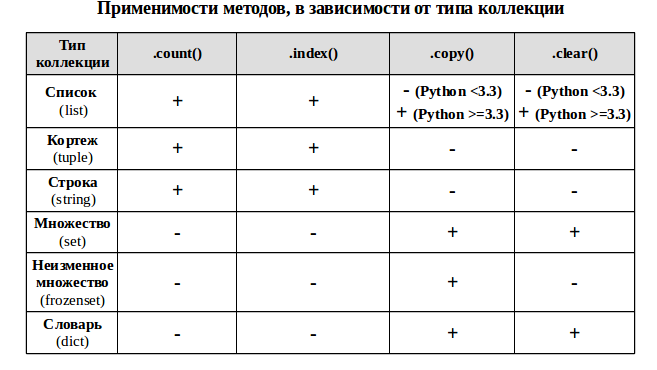
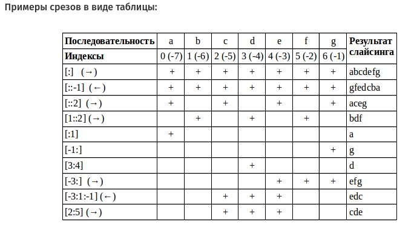
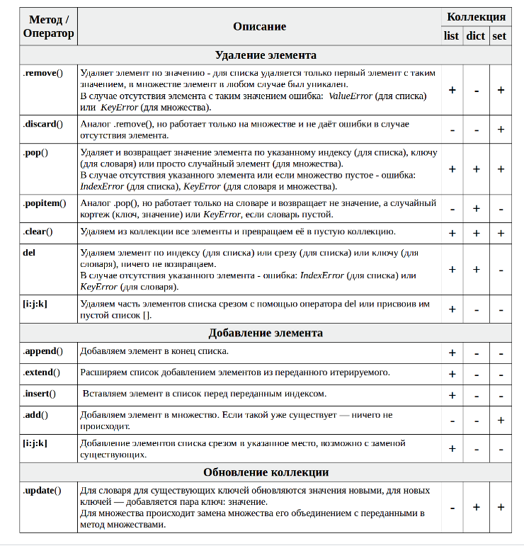
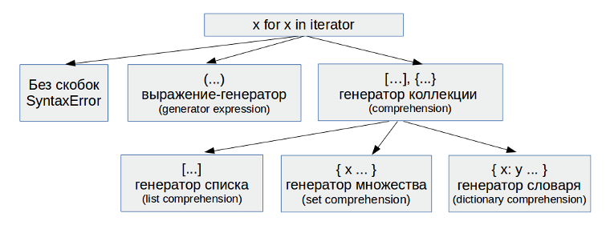
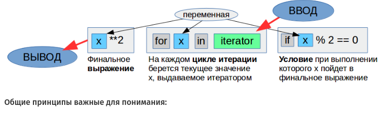
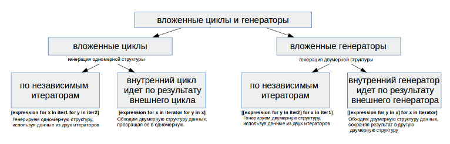
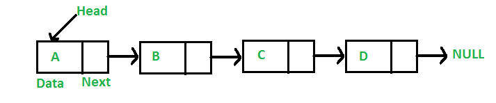

И пользовательские структуры данных.
Строки
Ссылки: СтрокиСтрока представляет последовательность символов в кодировке Unicode, заключенных в кавычки. Причем для определения строк Python позволяет использовать как одинарные, так и двойные кавычики:
message = "Hello World!" print(message) # Hello World! name = 'Tom' print(name) # TomЕсли строка длинная, ее можно разбить на части и разместить их на разных строках кода. В этом случае вся строка заключается в круглые скобки, а ее отдельные части - в кавычки:
text = ("Laudate omnes gentes laudate "
"Magnificat in secula ")
print(text)
Если же мы хотим определить многострочный текст, то такой текст заключается в тройные двойные или одинарные кавычки:
''' Это комментарий ''' text = '''Laudate omnes gentes laudate Magnificat in secula Et anima mea laudate Magnificat in secula ''' print(text)При использовани тройных одинарных кавычек не стоит путать их с комментариями: если текст в тройных одинарных кавычках присваивается переменной, то это строка, а не комментарий.
Управляющие последовательности в строке
Строка может содержать ряд специальных символов - управляющих последовательностей или escape-последовательности. Некоторые из них:\ : позволяет добавить внутрь строки слеш
\' : позволяет добавить внутрь строки одинарную кавычку
\" : позволяет добавить внутрь строки двойную кавычку
\n : осуществляет переход на новую строку
\t : добавляет табуляцию (4 отступа)
Используем некоторые последовательностей:
text = "Message:\n\"Hello World\"" print(text)Консольный вывод программы:
Message: "Hello World"Хотя подобные последовательности могут нам помочь в некоторых делах, например, поместить в строку кавычку, сделать табуляцию, перенос на другую строку. Но они также могут и мешать. Например:
path = "C:\python\name.txt" print(path)Здесь переменная path содержит некоторый путь к файлу. Однако внутри строки встречаются символы "\n", которые будут интерпретированы как управляющая последовательность. Так, мы получим следующий консольный вывод:
C:\python ame.txtЧтобы избежать подобной ситуации, перед строкой ставится символ r
path = r"C:\python\name.txt" print(path)
Вставка значений в строку
Python позволяет встравивать в строку значения других переменных. Для этого внутри строки переменные размещаются в фигурных скобках {}, а перед всей строкой ставится символ f:
userName = "Tom"
userAge = 37
user = f"name: {userName} age: {userAge}"
print(user) # name: Tom age: 37
В данном случае на место {userName} будет вставляться значение переменной userName. Аналогично на вместо {userAge} будет вставляться значение переменной userAge.
Обращение к символам строки
И мы можем обратиться к отдельным символам строки по индексу в квадратных скобках:string = "hello world" c0 = string[0] # h print(c0) c6 = string[6] # w print(c6) c11 = string[11] # ошибка IndexError: string index out of range print(c11)Индексация начинается с нуля, поэтому первый символ строки будет иметь индекс 0. А если мы попытаемся обратиться к индексу, которого нет в строке, то мы получим исключение IndexError. Например, в случае выше длина строки 11 символов, поэтому ее символы будут иметь индексы от 0 до 10.
Чтобы получить доступ к символам, начиная с конца строки, можно использовать отрицательные индексы. Так, индекс -1 будет представлять последний символ, а -2 - предпоследний символ и так далее:
string = "hello world" c1 = string[-1] # d print(c1) c5 = string[-5] # w print(c5)При работе с символами следует учитывать, что строка - это неизменяемый (immutable) тип, поэтому если мы попробуем изменить какой-то отдельный символ строки, то мы получим ошибку, как в следующем случае:
string = "hello world" string[1] = "R"Мы можем только полностью переустановить значение строки, присвоив ей другое значение.
Перебор строки
С помощью цикла for можно перебрать все символы строки:
string = "hello world"
for char in string:
print(char)
Получение подстроки
При необходимости мы можем получить из строки не только отдельные символы, но и подстроку. Для этого используется следующий синтаксис:string[:end]: извлекается последовательность символов начиная с 0-го индекса по индекс end (не включая) string[start:end]: извлекается последовательность символов начиная с индекса start по индекс end (не включая) string[start:end:step]: извлекается последовательность символов начиная с индекса start по индекс end (не включая) через шаг stepЗдесь start, end, step - это не ключевые слова, а индексы символов в строке и шаг.
Используем все варианты получения подстроки:
string = "hello world" # с 0 до 5 индекса sub_string1 = string[:5] print(sub_string1) # hello # со 2 до 5 индекса sub_string2 = string[2:5] print(sub_string2) # llo # с 2 по 9 индекса через один символ sub_string3 = string[2:9:2] print(sub_string3) # lowr
Объединение строк
Одной из самых распространенных операций со строками является их объединение или конкатенация. Для объединения строк применяется операция сложения:name = "Tom" surname = "Smith" fullname = name + " " + surname print(fullname) # Tom SmithС объединением двух строк все просто, но что, если нам надо сложить строку и число? В этом случае необходимо привести число к строке с помощью функции str():
name = "Tom" age = 33 info = "Name: " + name + " Age: " + str(age) print(info) # Name: Tom Age: 33
Повторение строки
Для повторения строки определенное количество раз применяется операция умножения:
print("a" * 3) # aaa
print("he" * 4) # hehehehe
Сравнение строк
Особо следует сказать о сравнении строк. Сравнение производится в лексикографическом порядке. При сравнении строк принимается во внимание символы и их регистр. Так, цифровой символ условно меньше, чем любой алфавитный символ. Алфавитный символ в верхнем регистре условно меньше, чем алфавитные символы в нижнем регистре. Например:str1 = "1a" str2 = "aa" str3 = "Aa" print(str1 > str2) # False, так как первый символ в str1 - цифра print(str2 > str3) # True, так как первый символ в str2 - в нижнем регистреПоэтому строка "1a" условно меньше, чем строка "aa". Вначале сравнение идет по первому символу. Если начальные символы обоих строк представляют цифры, то меньшей считается меньшая цифра, например, "1a" меньше, чем "2a".
Если начальные символы представляют алфавитные символы в одном и том же регистре, то смотрят по алфавиту. Так, "aa" меньше, чем "ba", а "ba" меньше, чем "ca".
Если первые символы одинаковые, в расчет берутся вторые символы при их наличии.
Зависимость от регистра не всегда желательна, так как по сути мы имеем дело с одинаковыми строками. В этом случае перед сравнением мы можем привести обе строки к одному из регистров.
Функция lower() приводит строку к нижнему регистру, а функция upper() - к верхнему.
str1 = "Tom" str2 = "tom" print(str1 == str2) # False - строки не равны print(str1.lower() == str2.lower()) # True
Поиск в строке
С помощью выражения term in string можно найти подстроку term в строке string. Если подстрока найдена, то выражение вернет значение True, иначе возвращается значение False:text = "hello world" exist = "hello" in text print(exist) # True exist = "sword" in text print(exist) # FalseСоответственно с помощью операторов not in можно проверить отсутствие подстроки в строке:
text = "hello world"
print("hello" not in text) # False
print("sword" not in text) # True
Методы строки
Полный список строковых методов есть в нашем справочнике.
- replace()
Метод replace() в Python используется для замены всех вхождений указанной подстроки в строке, на другую подстроку. Возвращает другую измененную строку.Синтаксис
str.replace(old, new[, count])где:
str — строка, в которой нужно выполнить замену;
old — подстрока, которую нужно заменить;
new — новая подстрока, которой нужно заменить все вхождения old;
count — необязательный параметр, который указывает, сколько раз нужно выполнить замену. По умолчанию заменятся все вхождения old.Примеры использования метода replace():
Ваша задача - написать функцию, которая принимает строку и возвращает новую строку с удаленными гласными. Например, строка "This website is for losers LOL!" станет "Ths wbst s fr lsrs LL!".def disemvowel(string_): vowels = 'aeiouAEIOU' for vowel in vowels: string_ = string_.replace(vowel, '') return string_ print(disemvowel("This website is for losers LOL!")) - count(arg)
считает сколько раз в строке встречается символ(ы) args = input() n = s.count('g') + s.count('G') + s.count('c') + s.count('C') print(n * 100 / len(s)) - upper()
переводит строку в верхний регистр - lower()
наоборот в нижний регистр - find(arg)
выдает индекс arg в строке. Если arg не будет в строке, то результат будет -1
более рекомендуется конструкция: if 'arg' in s:
Нужно иметь в виду, что метод создает новый объект, как результат выполнения метода, но оригинальный объект не меняется.Синтаксис:
S.find(sub[, start[, end]]) -> int
Возвращает наименьший индекс в S, где находится подстрока sub, так что sub содержится в S[start:end]. Необязательные аргументы start и end интерпретируются как в нотации slice.
Возвращает значение -1 в случае сбоя.Задача: вывести все индексы вхождения субстроки в строку.
В Python есть несколько способов поиска подстроки в строке. Например, можно использовать методы find() и rfind(), которые возвращают индекс первого вхождения подстроки и индекс последнего вхождения подстроки соответственно.
Однако, эти методы не предоставляют информации обо всех вхождениях подстроки в строку. Например, если необходимо найти все вхождения слова «мир» в предложении «Привет, мир! Мир — прекрасен», то find() и rfind() не смогут с этим справиться.
В этом случае можно использовать регулярные выражения или цикл для прохождения по строке и поиска всех вхождений подстроки.Использование регулярных выражений
Модуль re в Python предоставляет функцию finditer(), которая возвращает итератор, содержащий все вхождения подстроки в строке:import re s = "Привет, мир! Мир - прекрасен" matches = re.finditer('мир', s) indices = [match.start() for match in matches] print(indices) # [8, 13]Использование циклаМой способ: s = input() sub_s = input() lst_ind = [] index = -1 # начинаем поиск с начала строки while True: # находим следующее вхождение подстроки index = s.find(sub_s, index + 1) # если вхождение не найдено, выходим из цикла if index == -1: break lst_ind.append(index) print(len(lst_ind)) if len(lst_ind) != 0: print(*lst_ind) else: print(-1)Получше решение: input_str = input() req_str = input() pos = 0 if req_str not in input_str: print(-1) else: while True: pos = input_str.find(req_str, pos) if pos == -1: break else: print(pos, end=' ') pos += 1 - strip()
Функция strip() – это предопределенная библиотечная функция Python. Она используется для возврата копии исходной строки путем удаления начальных и конечных пробелов, символов, переданных в функцию strip().
Другими словами, это функция строки, которая удаляет символы как с левого, так и с правого конца строки, указывая набор символов для функции strip() в качестве аргумента. По умолчанию она удаляет пробелы из начальной и конечной строки, если в функцию strip() в Python не передается аргумент.Синтаксис
объект строки.strip('parametr')Параметр strip() является необязательным. Если программист не передает какой-либо параметр функции strip(), она удаляет начальные и конечные пробелы из строк.
Если набор заданного параметра передается в функцию strip(), она удаляет символы из исходной строки.
Возвращаемое значение: возвращает другой объект строки, равной исходной минус удаленный набор символов (параметр) или пробелов в конце и начале исходной строки.>>> a = ' abcd e ' >>> b = a.strip() >>> b 'abcd e' >>> b = b.strip('e') >>> b 'abcd ' - Метод ljust() и rjust()
Источник: Метод ljust() и rjust() в PythonМетод ljust() возвращает выровненную по левому краю строку заданной минимальной ширины. Синтаксис метода:
string.ljust(width[, fillchar])
Здесь fillchar ‒ необязательный параметр.Параметры:
Команда принимает два параметра:
width ‒ ширина данной строки. Если ширина меньше или равна длине строки, возвращается исходная строка.
fillchar (необязательно) ‒ символ для заполнения оставшегося места по ширинеВозвращаемое значение
Метод в Python возвращает выровненную по левому краю строку в пределах заданной минимальной ширины. Если fillchar определен, он также заполняет оставшееся пространство определенным символом. Пример:string = 'cat' width = 5 print(string.ljust(width, '!'))
Вывод:
cat!!Если вы хотите выровнять строку по правому краю, используйте rjust().
В первом параметре метода передаётся число для определения длины строки, во втором необязательном параметре — символ-заполнитель, по умолчанию это пробел.txt = 'abc' print(txt.rjust(6, '!'))
Результат выполнения кода: "!!!abc" - Метод split() - преобразование строки в список слов
Синтаксис:str.split(sep=None, maxsplit=-1)
Возвращает список слов в строке, используя sep в качестве строки-разделителя. Если задан параметр maxsplit, выполняется разбиение не более чем на maxsplit (таким образом, в списке будет не более maxsplit+1 элементов). Если значение maxsplit не указано или равно -1, то количество разбиений не ограничено (выполняются все возможные разбиения).Примеры:
>>> lst = 'a b c d' >>> lst.split() # без аргумента, разделение будет по умолчанию по пробелу ['a', 'b', 'c', 'd'] >>> lst = 'a : b : c : d' >>> lst.split(':') ['a ', ' b ', ' c ', ' d'] >>> lst.split(' : ') ['a', 'b', 'c', 'd'] ещё: >>> 'a, b, c, d'.split(',') ['a', ' b', ' c', ' d'] >>> 'a, b, c, d'.split(', ') ['a', 'b', 'c', 'd'] >>> '1,2,3'.split(',') ['1', '2', '3'] >>> '1,2,3'.split(',', maxsplit=1) ['1', '2,3'] >>> '1,2,,3,'.split(',') ['1', '2', '', '3', ''] >>> '1<>2<>3<4'.split('<>') ['1', '2', '3<4'] # Отличие между list() и split() str = 'string with multi spaces' print(lst.split()) # ['string', 'with', 'multi', 'spaces'] print(list(str)) # ['s', 't', 'r', 'i', 'n', 'g', ' ', ' ', ' ', ' ', ' ', 'w', 'i', 't', 'h', ' ', ' ', ' ', ' ', ' ', ' ', ' ', ' ', 'm', 'u', 'l', 't', 'i', ' ', 's', 'p', 'a', 'c', 'e', 's'] - Метод index()
Метод index() возвращает индекс указанного элемента в списке.
Синтаксис метода в Python:list.index(element, start, end)
element – элемент для поиска;
start (необязательно) – начать поиск с этого индекса;
end (необязательно) – искать элемент до этого индекса.
Метод возвращает индекс данного элемента в списке. Если элемент не найден, возникает исключение ValueError.
Примечание: Команда возвращает только первое вхождение соответствующего элемента. - Метод capitalize():
Метод capitalize() преобразует первый символ строки в верхний регистр и переводит в нижний регистр все остальные символы, если таковые имеются.
Синтаксис:string.capitalize()
Функция не принимает никаких параметров. Возвращает строку, в которой первая буква заглавная, а все остальные символы ‒ строчные. Это не изменяет исходную строку.В Python часто возникает задача преобразования первой буквы каждого слова в строке в заглавную. Например, есть строка ‘hello world’, и необходимо преобразовать ее в ‘Hello World’. Это можно сделать несколькими способами.
Использование встроенного метода title() Самый простой способ заключается в использовании встроенного метода title(), который делает первую букву каждого слова в строке заглавной.
Пример:s = 'hello world' s = s.title() print(s) # Вывод: 'Hello World'
Использование метода capitalize() с разделением строки
Если нужно больше контроля над процессом, можно использовать комбинацию методов split(), capitalize() и join().
Метод split() разделяет строку на список слов, capitalize() делает первую букву слова заглавной, а join() объединяет слова обратно в строку.
Пример:s = 'hello world' s = ' '.join(word.capitalize() for word in s.split()) print(s) # Вывод: 'Hello World'
Важно отметить, что метод title() делает все остальные буквы в слове строчными, в то время как capitalize() не изменяет остальные буквы в слове. -
Метод isdigit()
Метод isdigit() возвращает True, если все символы в строке являются цифрами. Если нет, возвращается False.Синтаксис:
string.isdigit()
Команда возвращает:
Истинно(True), если все символы в строке являются цифрами.
Ложь(False), если хотя бы один символ не является цифрой.
Пример:s = "28212" print(s.isdigit()) # Ответ True s = "Mo3 nicaG el l22er" print(s.isdigit()) # Ответ False
В Python надстрочные и подстрочные индексы (обычно записываемые с использованием Unicode) также считаются цифровыми символами. Следовательно, если строка содержит эти символы вместе с десятичными символами, isdigit() возвращает True.Римские цифры, числители валют и дроби (обычно записываемые в кодировке Unicode) считаются числовыми символами, но не цифрами. Isdigit() возвращает False, если строка содержит эти символы. Чтобы проверить, является ли символ числовым или нет, вы можете использовать метод isnumeric().
- Методы startswith() и endswith()
Метод startswith используется для определения того, начинается ли строка с указанных символов или нет. Метод endswith используется для определения того, заканчивается ли строка указанными символами или нет. Эти две функции возвращают True или False.Синтаксис:
yourstring.endswith("end_string")Этот метод возвращает True, если end_string совпадает с концом yourstring, иначе False. - Метод isalpha()
Синтаксис:string.isalpha()
Метод isalpha() возвращает True, если все символы в строке являются алфавитными. Если нет, возвращается False.
Функции строки
Функции ord и len
Поскольку строка содержит символы Unicode, то с помощью функции ord() мы можем получить числовое значение для символа в кодировке Unicode:
print(ord("A")) # 65
Для получения длины строки можно использовать функцию len():
string = "hello world" length = len(string) print(length) # 11
str()
Преобразует объект в скобках в строку.Параметры
Функция str() принимает три параметра:
object — чье строковое представление должно быть возвращено
encoding — в которую необходимо декодировать данный байтовый объект (может быть UTF-8, ASCII и т. д.)
errors — ответ при сбое декодирования (может быть строгим, игнорировать, заменять и т. д.)
Функция str() возвращает:
печатное строковое представление данного объекта
строковое представление данного байтового объекта в предоставленной кодировке
Примеры
# строковое представление
name = str('Коля')
print(name)
# строковое представление целого числа
age = str(24)
print(age)
# строковое представление числовой строки
height = str('175см')
print(height)
# Результат
Коля
24
175см
2. Функция sorted()
Служит для сортировки итерируемых объектов и в частности может применяться для сортировки строк.
Синтаксис:
sorted(iterable, key=None, reverse=False)Параметры функции:
`iterable` — строка, список, кортеж, множество, словарь.
`key` — необязательный параметр. Если указать ключ, то сортировка будет выполнена по функции этого ключа.
`reverse` — необязательный параметр. По умолчанию сортировка выполняется по возрастанию. Если указать `reverse=True`, то можно отсортировать по убыванию.
Функция возвращает список отсортированных элементов.
Пример:
print(sorted(input().lower()) == sorted(input().lower()))
Здесь input() возвращает строку. Метод lower() переводит эту строку полностью в нижний регистр.
Срез (диапазон строки)
Общий шаблон:s = 'stroka' print(s[x1:x2:x3]Здесь напечатается строка из символов, где x1 - это индекс первого нужного символа в строке. Если не указан, то по умолчанию равен 0 Может иметь отрицательное значение, тогда индекс считается с првой стороны, но все равно далее символы смотрятся в правую сторону.
x2 - индекс последнего нужного символа. Может иметь отрицательное значение, то есть отсчет с правой стороны.
x3 - шаг приращения индекса, если не указан, то по умолчанию 1. Может иметь отрицательное значение. s[::-1] просто перевернёт строку.
Поиск строк между определенными строками
Пример: файл https://stepik.org/media/attachments/lesson/209719/2.html содержит статью с Википедии про язык Python. В этой статье есть теги code, которыми выделяются конструкции на языке Python. Вам нужно найти все строки, содержащиеся между тегами %lt;code> и </code> и найти те строки, которые встречаются чаще всего и вывести их в алфавитном порядке, разделяя пробелами.Решение:
from urllib.request import urlopen
import re
from collections import Counter
html = urlopen("https://stepik.org/media/attachments/lesson/209719/2.html").read().decode('utf-8')
pattern = '<code>(.*?)</code>'
elements_count = Counter(sorted(re.findall(pattern, html)))
print(elements_count)
Здесь с помощью urlopen открываем веб-страницу.Далее используем регулярные выражения. В pattern = '<code>(.*?)</code>' точка означает любой символ кроме перевода строки. Звездочка означает от нуля и более символов. ? убирает жадность.
Функция re.findall выдает список всех вхождений pattern в строку html. Непонятно только почему в содержимое элемента списка не входят открывающий и закрывающий теги code.
Функция sorted() сортирует список в алфавитном порядке.
Функция Counter создает на основе списка словарь, ключ = элементу, а значение = сколько раз этот элемент входит в список.
Unicode, что это и как использовать
Ссылки: Как работать с Unicode в Python: руководствоКак работать с Unicode в Python
Кодировки в Python и Unicode
Кодировки: общая информация
В общем виде кодировка предполагает перевод любого символа в понятный компьютеру вид, когда каждая буква, число или иной знак (например, !, %, ?) записывается в двоичном виде, как последовательность нулей и единиц.Unicode (Юникод) — это стандарт кодирования символов для большинства компьютеров. Он гарантирует, что текст — включая буквы, символы, эмодзи и даже управляющие символы — будет выглядеть одинаково на разных устройствах, платформах и в цифровых документах, независимо от операционной системы или программного обеспечения. Это важная составляющая интернета и компьютерной индустрии в целом. Без него всё было бы сложно и хаотично.
Unicode сам по себе не является кодировкой, а больше похож на базу данных почти всех возможных символов. В нём есть кодовая точка (идентификатор для каждого символа в базе данных), которая может иметь значение от 0 до 1,1 миллиона – как видите, скорее всего в ближайшее время эти уникальные кодовые точки не закончатся.
Каждая кодовая точка в Unicode обозначается U+n, где U+ — кодовая точка Unicode, а n — это набор для символа из четырех-шести шестнадцатеричных цифр. Unicode намного надежнее ASCII, в котором только 128 символов. Обмен цифровым текстом с помощью ASCII сложнее, так как он основан на американском английском и не поддерживает символы с диакритическими знаками. А в Unicode почти 150 000 символов и он охватывает символы всех языков мира.
Здесь стоит немного остановиться на системах счисления, поскольку компьютеры не используют привычную нам десятичную, а работают преимущественно с двоичными, восьмеричными и шестнадцатеричными значениями. Это важно, поскольку, в отличие от ASCII с его восьмеричной системой счисления, Юникод использует шестнадцатеричную систему счисления, которая содержит 216 возможных символов.
Системы счисления и работа с ними в Python
Если мы попробуем представить, допустим, число 12 в шестнадцатеричном виде в Python, то получим следующее (введите в интерпретаторе первую строку из примера ниже и вы увидите, что Python выдаст вам 18):
>>> int('12', base=16)
18
Здесь 12 - это число в системе счисления на которую указывает аргумент base. base=16 - это шестнадцатиричная система счисления. 18 - число в десятичной системе, равное 12 в шестнадцатиричной системе.Почему так получилось? Дело в том, что первые 16 символов в такой кодировке — это значения от 0 до 9 плюс латинские буквы A-F:
десят. - 16-тер. 0 = 0 1 = 1 2 = 2 3 = 3 4 = 4 5 = 5 6 = 6 7 = 7 8 = 8 9 = 9 10 = A 11 = B 12 = C 13 = D 14 = E 15 = FПроверить это несложно, введите, например:
>>> int('F', base=16)
15
A занимает 10-е место после 0-9. 16-м символом, соответственно, будет F, далее после F нет букв, идет 11, а затем 12, то есть значение 12 занимает 18-е место в шестнадцатеричной системе счисления, потому Python и выдал нам такой результат. С помощью аргумента base мы можем запросить нужное нам число и в любой другой системе счисления. Допустим, в привычной десятичной или восьмеричной, а далее укажем и шестнадцатеричную:
>>> int('25', base=10)
25
>>> int('25', base=8)
21
>>> int('25', base=16)
37
Но будьте осторожны, поскольку функция int() принимает только целочисленные значения и значения ряда букв (от A до F), которые также выступают в качестве чисел в шестнадцатеричной системе. Понять такуют концепцию не сложно, просто вспомните, что в латыни все числа тоже передавались буквами: III, V, VII, X, LIV и т. д. Поэтому следующая запись вызовет ошибку, так как символу L числовое значение не присвоено ни в одной из систем:
>>> int('L', base=16)
Traceback (most recent call last):
File "<pyshell#6>", line 1, in <module>
int('L', base=16)
ValueError: invalid literal for int() with base 16: 'L'
Как видим, Python нам указал и причину ошибки: недопустимый литерал для функции int() с базовой системой счисления 16. А вот с F всё будет в порядке в шестнадцатеричной системе счисления:
>>> int('F', base=16)
15
Но не во всех остальных, где эта буква не используется в качестве числового значения, например:
>>> int('F', base=8)
Traceback (most recent call last):
File "<pyshell#12>", line 1, in <module>
int('F', base=8)
ValueError: invalid literal for int() with base 8: 'F'
Кроме того, в Python существует и более удобное представление числовых значений в машинных системах счисления: двоичной, восьмеричной и шестнадцатеричной. Взгляните на следующие примеры:
>>> 10 10 >>> 0b10 2 >>> 0o10 8 >>> 0x10 16В первом случае мы не использовали никакого префикса для числа, поэтому интерпретатор нам выдал значение числа 10 в привычной для нас десятичной системе счисления. 0b — это префикс для представления числа в двоичном виде, 0o — в восьмеричном и, наконец, 0x — в шестнадцатеричном. Таким образом, если мы хотим узнать, какое место занимает числовой символ F в шестнадцатеричной системе счисления (чему равен в 10-тичной системе), то нам нужно ввести в интерпретаторе следующее:
>>> 0xF 15С остальными же префиксами (и без них) мы получим предсказуемую ошибку. Теперь мы готовы изучать Юникод.
основы работы Unicode в Python
Собственно, называть Юникод кодировкой не совсем корректно, поскольку он не извлекает биты, а только использует кодовые точки. Поэтому более правильно считать Юникод базовым набором символов. Наиболее же распространенным стандартом кодировки, использующим Unicode в качестве такого набора символов, является UTF-8, с которым вы наверняка сталкивались, если занимались конверсией текстов: например, в редакторе Notepad++. UTF-8 как раз и предназначен для конверсии символов Юникода в понятный компьютеру вид.Конвертирование кодовых точек Unicode в Python
Кодирование — это процесс представления данных в читаемой компьютером форме. Существуют разные способы кодирования данных — ASCII, Latin-1 и т. д. У каждой кодировки свои сильные и слабые стороны, но пожалуй, самой распространенной является UTF-8 — тип кодирования, который отображает символы со всего мира в одном наборе. То есть, UTF-8 это незаменимый инструмент для всех, кто работает с интернационализированными данными. В целом, UTF-8 справляется с многими задачами. Он относительно эффективен и может работать в разных программах. UTF-8 конвертирует кодовую точку Unicode в понятные компьютеру шестнадцатеричные байты. Другими словами, Unicode – это маппинг, а UTF-8 позволяет компьютеру понять этот маппинг.В Python 3 кодировка строк по умолчанию – UTF-8, значит, любая кодовая точка Unicode в строке Python автоматически конвертируется в соответствующий символ.
Сейчас мы создадим символ авторского права (©) с помощью его кодовой точки Unicode в Python. Сначала запустите интерактивную консоль Python в терминале, а затем введите:
>>> s = '\u00A9' >>> sВ этом коде мы создали строку s с кодовой точкой Unicode \u00A9. Как упоминалось ранее, поскольку строка Python по умолчанию использует кодировку UTF-8, вывод значения s автоматически заменяет его на соответствующий символ Unicode. Обратите внимание, что \u в начале кода обязателен. Без него Python не сможет конвертировать кодовую точку. В выводе получим соответствующий символ Unicode:
'©'
В Python есть встроенные функции для кодирования и декодирования строк. Функция encode() конвертирует строку в байтовую строку.
Для этого откройте интерактивную консоль Python и введите код:
>>> ''.encode('utf-8')
В результате получим байтовую строку символа:
b'\xf0\x9f\x85\xa5'Обратите внимание, что перед каждым байтом стоит \x, значит, это шестнадцатеричное число.
Далее с помощью функции decode() конвертируем байтовую строку в обычную. Функция decode() принимает в качестве аргумента тип кодировки. Отметим, что функция decode() может декодировать только байтовую строку, которая задается с помощью буквы b в начале строки. Удаление b приведет к ошибке AttributeError.
В консоли введите:
>>> b'\xf0\x9f\x85\xa5'.decode('utf-8')
Получим следующий вывод:
''Другие примеры:
>>> "таймвеб".encode("utf-8")
b'\xd1\x82\xd0\xb0\xd0\xb9\xd0\xbc\xd0\xb2\xd0\xb5\xd0\xb1'
>>> b'\xd1\x82\xd0\xb0\xd0\xb9\xd0\xbc\xd0\xb2\xd0\xb5\xd0\xb1'.decode("utf-8")
'таймвеб'
Мы получили набор из 14 двухбайтовых значений. Дело в том, что каждый кириллический символ кодируется в виде двух таких значений. А вот если мы попробуем записать название латиницей и закодируем его, то получим следующее:
>>> "timeweb".encode("utf-8")
b'timeweb'
>>> b'timeweb'.decode("utf-8")
'timeweb'
Для латинских символов без диакритических знаков кодировка максимально простая и понятная. А теперь давайте попробуем написать что-нибудь по-французски с их «фирменными» значками:
>>> "répéter".encode("utf-8")
b'r\xc3\xa9p\xc3\xa9ter'
>>> b'r\xc3\xa9p\xc3\xa9ter'.decode("utf-8")
'répéter'
Здесь хорошо видно, что для буквы é тоже используется свой двухбайтовый набор символов, как и для кириллицы. В результате латинские буквы без диакритических знаков в кодировке UTF-8 остались как есть, а символ é был преобразован в двухбайтовое значение.
Как подключить метод Unicode в Python
Python 3 имеет полную поддержку Юникода и даже реализован с его помощью, поэтому явного указания в начале файла .py на UTF-8 не требуется. И это значит, что, например, присвоение répéter = "~/myworks/répéter.pdf" Python воспримет без каких-либо проблем (однако оно всё равно не рекомендуется, поскольку с этими символами могут возникнуть проблемы при работе в самой системе и других программах). А еще это значит, что кодировать и декодировать значения в Python 3 можно без явного указания кодировки, то есть так:>>> "timeweb".encode() b'timeweb' >>> b'timeweb'.decode() 'timeweb' >>> "répéter".encode() b'r\xc3\xa9p\xc3\xa9ter' >>> b'r\xc3\xa9p\xc3\xa9ter'.decode() 'répéter'Как видим, интерпретатор обработал все значения корректно, никаких ошибок. Однако указывать кодировку всё же рекомендуется, поскольку UTF-8 хоть и наиболее распространена, но всё же не универсальна и поддерживается пока не везде.
Теперь у вас есть базовое понимание интерпретации Unicode в Python. Далее мы разберем встроенный в Python модуль unicodedata, чтобы применить расширенные методы Unicode для строк.
Функция list()
Полезным может оказаться побайтовый вызов значений закодированных символов. Делается это при помощи функции list():
>>> "таймвеб".encode("utf-8")
b'\xd1\x82\xd0\xb0\xd0\xb9\xd0\xbc\xd0\xb2\xd0\xb5\xd0\xb1'
>>> list(b'\xd1\x82\xd0\xb0\xd0\xb9\xd0\xbc\xd0\xb2\xd0\xb5\xd0\xb1')
[209, 130, 208, 176, 208, 185, 208, 188, 208, 178, 208, 181, 208, 177]
Другие кодировки в Unicode
Таблица символов Python Unicode objects поистине огромна: только основная ее часть включает 65535 символов, куда входят все латинские, кириллические, греческие, арабские и некоторые другие с различными диакритическими знаками. Остальная часть символов зарезервирована для языков с иероглифической письменностью и разнообразных значков (например, эмодзи). Но UTF-8 не единственная из используемых кодировок. Также определенную популярность имеют UTF-16 и UTF-32. И отношения между ними такие же сложные, как и между расширениями ASCII. Давайте сравним:
>>> word = "τφχψ"
>>> codedata = word.encode("utf-8")
>>> codedata.decode("utf-8")
'τφχψ'
>>> codedata.decode("utf-16")
'蓏蛏蟏裏'
>>> codedata.decode("utf-32")
Traceback (most recent call last):
File "<pyshell#55>", line 1, in <module>
codedata.decode("utf-32")
UnicodeDecodeError: 'utf-32-le' codec can't decode bytes in position 0-3: code point not in range(0x110000)
Как видим, греческие символы в кодировке UTF-16 преобразовались в… японские, а попытка их представления в кодировке UTF-32 и вовсе привела к ошибке. И это серьезный повод стараться использовать только общепринятую, которой является UTF-8, иначе в работе ваших программ в разных окружениях могут случаться сбои.
Встроенные функции Python
Эти полезные функции расширят ваши возможности при работе с кодировками и помогут выполнять следующее:ascii() — служит для перевода значения в кодировку ASCII;
bin() — дает двоичное значение целого числа;
oct() — дает восьмеричное значение целого числа;
hex() — дает шестнадцатеричное значение целого числа;
bytes() — представляет значение в побайтовом виде;
str() — представляет значение в строковом виде;
int() — представляет значение в целочисленном виде.
Чтобы узнать десятичное значение числа в шестнадцатеричной системе используется синтаксис:
>>> int('1F600', 16)
128512
>>> int('1F64F', 16)
128591
>>>
Теперь конкретные примеры:
>>> ascii('répéter')
"'r\\xe9p\\xe9ter'"
>>> ascii(32)
'32'
>>> bin(32)
'0b100000'
>>> oct(32)
'0o40'
>>> hex(32)
'0x20'
>>> bytes(18)
b'\x00\x00\x00\x00\x00\x00\x00\x00\x00\x00\x00\x00\x00\x00\x00\x00\x00\x00'
>>> str(32)
'32'
>>> int('32')
32
Прямой ввод строковых значений
Благодаря тому, что Python имеет полную поддержку UTF-8, мы можем ввести в качестве строкового значения практически любой набор символов, который будет корректно обработан:>>> japanese = '蓏蛏蟏裏' >>> print(japanese) 蓏蛏蟏裏Как видим, интерпретатор не выдал ошибку и в переменной japanese у нас теперь хранятся иероглифы. Еще один экзотический пример:
>>> arabic = 'سامثعبان كبير غير' >>> print(arabic) ثعبان كبير غير سام >>>Мы скопировали Python по-арабски и сохранили в переменной arabic. И интерпретатор тоже обработал это корректно, с учетом даже направления письма, что нетрудно проверить, попросив Python вывести эти символы в кодировке UTF-8:
>>> arabic.encode("utf-8")
b'\xd8\xab\xd8\xb9\xd8\xa8\xd8\xa7\xd9\x86 \xd9\x83\xd8\xa8\xd9\x8a\xd8\xb1 \xd8\xba\xd9\x8a\xd8\xb1 \xd8\xb3\xd8\xa7\xd9\x85'
И затем декодируем первый по счету блок:
>>> b'\xd8\xab\xd8\xb9\xd8\xa8\xd8\xa7\xd9\x86'.decode("utf-8")
'ثعب
Мы получили крайнее правое слово.
Таким образом, благодаря полной поддержке Юникода и встроенным функциям Python предлагает самые широкие возможности для работы с кодировкой UTF-8 и любыми другими.
Основные методы
Decode и incode - Методы, отвечающие за кодирование и декодирование строки в нужном формате.ASCII - Функция, которая приводит string to ASCII.
Chr, ord - Взаимообратные операции. Первая демонстрирует Unicode-символ соответствующий to введенному числовому значению. Вторая вернет числовой аналог конкретной символьной записи.
Hex, bin, int, oct - Функции, позволяющие переводить числа to различные системы счисления.
Bytes - Работает так же, как и метод encode. Отличается расширенными возможностями.
Str - Перевод байтовых строк в обычные с использованием указанной ранее кодировки.
Unicodedata - Модуль, умеющий работать с базами данных всех Unicode-элементов.
Список
Список - переменная, содержащая список данных (элементов), внутри квадратных скобок идущих через запятую. Элементы списка можно в отличии от строки изменять.list = [] # пустой список array = [1, 2, 3, 4, 5, 6, 7] # список из целых чисел int print(type(array)) # класс list ar = [2, 4.6, 'str', [1, 2, 3]] # список, состоящий из целого числа, из числа с плавающей точкой, из строки и из списка
Индексация списков:
Индексация элементов списка имеет 2 способа, традиционная с 0 и с конца списка с -1. Например есть список a = [1, 2, 3, 4]Тогда по обычной индексации элемент 1 имеет индекс 0 (a[0] = 1, a[1] = 2, a[2] = 3, a[3] = 4)
По индексации с конца последний элемент имеет индекс -1 и далее левее на -1 индекс растет: a[-1] = 4, a[-2] = 3, a[-3] = 2, a[-4] = 1
Индекс, в общем случае, не обязан быть числом. К элементам хеш-таблиц (которые мы рассмотрим позже) можно обращаться по строковому индексу.
Также, поскольку списки - изменяемый тип данных, то по индексу возможно присвоение:
>>> array = [1, 2, 3, 0, 1.4, -2] >>> array[1] = 42 >>> array [1, 42, 3, 0, 1.4, -2]
Сложение списков:
array2 = [9, 10] new_array = array + array2 new_array = [0, 2, 3, 4, 5, 6, 7, 8, 9, 10]
Умножение на список::
>>> list=['f',4,5,'r'] >>> list ['f', 4, 5, 'r'] >>> list*5 ['f', 4, 5, 'r', 'f', 4, 5, 'r', 'f', 4, 5, 'r', 'f', 4, 5, 'r', 'f', 4, 5, 'r'] >>>
Как узнать входит ли 'stroka' в список list
if 'stroka' in list:
# true, входит
else:
# false, не входит
Можно для этой цели использовать модуль index(var):
>>> students.index('Sasha')
2
Здесь если строка Sasha входит в список, то вернется индекс этого элемента, иначе вернет ошибку.
Присвоение списков
В питоне:
>>> a = [1, 2, 3, 4] >>> b = a >>> b [1, 2, 3, 4] >>> a[3] = 10 >>> a [1, 2, 3, 10] >>> b [1, 2, 3, 10]Видно, что если изменили значение элемента в списке a, то изменится и список b, хотя обычно в других языках так не должно быть.
Когда вы пишите a = [1, 2, 3], то а лишь указывает на список [1, 2, 3], это как ярлык, который вы прикрепили к данному списку. Затем, делая b=a, вы не копируете список, вы просто создаете новый ярлык к списку, на который указывает а. Изменяя a, вы меняете также b. Потому что они указывают на один и тот же список.
Чтобы a и b открепить друг от друга, нужно одному из них присвоить новый список (или любой объект другого типа).
Копирование списка
Чтобы скопировать список, создайте срез, содержащий весь исходный список без указания первого и второго индексов ( [:] ). Эта конструкция создает срез, который начинается с первого элемента и завершается последним; в результате создается копия всего списка.Представьте, что вы создали список своих любимых блюд и теперь хотите создать отдельный список блюд, которые нравятся вашему другу. Пока вашему другу нравятся все блюда из нашего списка, поэтому вы можете создать другой список, просто скопировав наш:
my_foods = ['pizza', 'falafel', 'carrot cake']
friend_foods = my_foods[:]
print("My favorite foods are:")
print(my_foods)
print("\nMy friend's favorite foods are:")
print(friend_foods)
Сначала создается список блюд my_foods . Затем создается другой список friend_foods . Чтобы создать копию my_foods , программа запрашивает срез my_foods без указания индексов и сохраняет копию в friend_foods . При выводе обоих списков становится видно, что они содержат одинаковые данные.
Добавим новое блюдо в каждый список и покажем, что каждый из них отслеживает любимые блюда человека:
my_foods.append('cannoli')
friend_foods.append('ice cream')
print("My favorite foods are:")
print(my_foods)
print("\nMy friend's favorite foods are:")
print(friend_foods)
вот что происходит при попытке копирования списка без использования среза:
my_foods = ['pizza', 'falafel', 'carrot cake']
# Не работает:
friend_foods = my_foods
my_foods.append('cannoli')
friend_foods.append('ice cream')
print("My favorite foods are:")
print(my_foods)
print("\nMy friend's favorite foods are:")
print(friend_foods)
Вместо того чтобы сохранять копию my_foods в friend_foods , мы присваиваем переменной friend_foods значение переменной my_foods . На самом деле этот синтаксис сообщает Python, что новая переменная friend_foods должна быть связана со списком, уже хранящимся в my_foods , поэтому теперь обе переменные связаны с одним списком. В результате при добавлении элемента 'cannoli' в my_foods этот элемент также появляется в friend_foods . Аналогичным образом элемент 'ice cream' оказывается в обоих списках, хотя на первый взгляд был добавлен только в friend_foods.Вывод показывает, что оба списка содержат одинаковые элементы, а это совсем не то, что требовалось.
Если не ошибаюсь, то копия будет создаваться, если список не содержит внутри себя другой список.
Методы списка
-
Добавление элемента в список
1. append()
Метод добавляет в конец списка новый элемент.array.append(8)
В конец списка array добавили элемент 8.Другой способ добавления в конец списка нового элемента - оператор приращения:
array +=[8]
Интересный пример по этому случаю:>>> students = ['Ivan', 'Masha', 'Sasha'] >>> students += ['Olga'] >>> students ['Ivan', 'Masha', 'Sasha', 'Olga'] >>> students += 'Olga' >>> students ['Ivan', 'Masha', 'Sasha', 'Olga', 'O', 'l', 'g', 'a']
Видна разница между добавлением элемента с помощью модуля append и оператором +=.
И списки, и строки - это последовательности (см. https://docs.python.org/3/library/stdtypes.html?highlight=mutable%20sequence#) .
+= складывает список с элементами последовательности по отдельности.
А append прибавляет к списку новый элемент списка, сколько бы вложенных элементов в этом добавляемом элементе ни было.Продолжение: >>> students += ['Dmitriy', 'Alexei'] >>> students ['Ivan', 'Masha', 'Sasha', 'Olga', 'O', 'l', 'g', 'a', 'Dmitriy', 'Alexei'] >>> students.append(['Anna', 'Elena']) >>> students ['Ivan', 'Masha', 'Sasha', 'Olga', 'O', 'l', 'g', 'a', 'Dmitriy', 'Alexei', ['Anna', 'Elena']]
Другие методы добавления элемента в список
2. extend(iterable)
вставляет весь iterable в конец списка.3. insert(i, x)
вставляет элемент x на позицию c индексом i, обеспечивая таким образом точную точку вставки.
Пример:list1 = [1, 2, 5] list2 = [3, 4] list1.insert(2, list2) print(list1) # Получим: [1, 2, [3, 4], 5]
Используйте срезы для аккуратной вставки list2 в list1 без создания дополнительных уровней вложенности:
# Вставляем аккуратно и точно! list1[start:end] = list2 list1 = [1, 2, 5] list2 = [3, 4] list1[2:2] = list2 print(list1) # Выведет: [1, 2, 3, 4, 5]
Если вы предпочитаете уникальные значения, примените вычитание множеств, чтобы добавить в список только те элементы, которых в нем еще нет:# Добавляем только неповторяющиеся элементы list1.extend(set(list2) – set(list1))
- Методы удаления элементов из списка:
- remove() - удаление одного элемента из списка по имени
Применяется этот метод, если не известен индекс удаляемого элемента.
Параметров может быть только один, то есть можно удалить за раз только один элемент:['Ivan', 'Masha', 'Sasha', 'Olga', 'O', 'l', 'g', 'a', 'Dmitriy', 'Alexei', ['Anna', 'Elena']] >>> students.remove('o', 'l', 'g', 'a', ['Anna', 'Elena']) Traceback (most recent call last): File "", line 1, in TypeError: remove() takes exactly one argument (5 given) >>> students.remove(['Anna', 'Elena']) >>> students ['Ivan', 'Masha', 'Sasha', 'Olga', 'O', 'l', 'g', 'a', 'Dmitriy', 'Alexei'] Метод remove() удаляет только первое вхождение заданного значения. Если существует вероятность того, что значение встречается в списке несколько раз, то используйте цикл, чтобы определить, были ли удалены все вхождения данного значения.
- Метод pop(): удаление по индексу
Иногда значение, удаляемое из списка, должно как-то использоваться. В этом случае, если еще известен индекс удаляемого элемента используется метод pop().
В качестве аргумента pop() получает индекс, а возвращает удалённое значение:>>> lst = [1, 2, 3, 5] >>> lst.pop(3) 5 >>> print(lst) [1, 2, 3]
Если передать отрицательное значение, то pop() будет считать индексы не с нуля, а с -1Если оставить pop() без аргумента, то удалится последний элемент — потому что -1 является аргументом по умолчанию.
При попытке обратиться в методе pop() к несуществующему индексу, интерпретатор выбросит исключение IndexError.
- Метод clear(): очищение списка
clear() удаляет из списка всё, то есть буквально очищает его. Он не принимает аргументов и не возвращает никаких значений:
print(lst) [1, 2, 3] >>> lst.clear() >>> print(lst) []
- Ключевое слово del
Если вам известна позиция элемента, который должен быть удален из списка, воспользуйтесь оператором del:motorcycles = ['honda', 'yamaha', 'suzuki'] print(motorcycles) del motorcycles[0] print(motorcycles)
Оператор del удаляет первый элемент, 'honda' , из списка motorcycles:['honda', 'yamaha', 'suzuki'] ['yamaha', 'suzuki']
Можно удалить срез элементов при этом элемент с правым индексом не удалится. В примере ниже это строка 'IV':new_list = ['ноль', 1, [2.1, 'два и два'], 3, 'IV'] del new_list[1:4] print(new_list) >>> ['ноль', 'IV']
Чтобы очистить список, достаточно передать полный срез [:]:new_list = ['ноль', 1, [2.1, 'два и два'], 3, 'IV'] del new_list[:] print(new_list) >>> []
Также del можно использовать с отрицательными индексами:new_list = ['ноль', 1, [2.1, 'два и два'], 3, 'IV'] del new_list[-4] print(new_list) >>> ['ноль', [2.1, 'два и два'], 3, 'IV']
Со срезами это тоже работает:new_list = ['ноль', 1, [2.1, 'два и два'], 3, 'IV'] del new_list[-3:-1] print(new_list) >>> ['ноль', 1, 'IV']
Если при удалении единичного элемента указать несуществующий индекс, то Python выдаст ошибку IndexError.Если выбирать: оператор del или метод pop() , — вам поможет простое правило: если вы собираетесь просто удалить элемент из списка, никак не используя его после удаления, то выбирайте оператор del ; в противном случае выбирайте метод pop() .
- remove() - удаление одного элемента из списка по имени
- Сортировка списка
1. sort() - сортировка элементов по возрастанию>>> students.sort() >>> students ['Alexei', 'Dmitriy', 'Ivan', 'Masha', 'Olga', 'Sasha', 'a', 'g', 'l']
Здесь строки отсортировались по алфавитному порядку, буквы также по алфавиту, но после строк.Список также можно отсортировать в обратном алфавитном порядке; для этого методу sort() следует передать аргумент reverse=True :
cars = ['bmw', 'audi', 'toyota', 'subaru'] cars.sort(reverse=True) print(cars) # ['toyota', 'subaru', 'bmw', 'audi']
2. Функция sorted()
Второй способ, использовать функцию sorted():
Синтаксис:sorted(iterable, key=None, reverse=False)
- iterable — обязательный. В него передаётся итерируемый объект, который вы хотите отсортировать (список, кортеж, строка, множество, замороженное множество).
- key — необязательный. Указывает на функцию (или другой вызываемый объект), которая должна быть вызвана для каждого элемента iterable перед выполнением сравнений. По умолчанию None.
Значением параметра key должна быть функция (или другой вызываемый объект), которая принимает единственный аргумент и возвращает key для использования в целях сортировки. Этот метод быстр, поскольку функция key вызывается ровно один раз для каждой входной записи.Распространенным способом является сортировка сложных объектов с использованием некоторых индексов объекта в качестве ключей. Например:
student_tuples = [ ('john', 'A', 15), ('jane', 'B', 12), ('dave', 'B', 10), ] sorted(student_tuples, key=lambda student: student[2]) # sort by age [('dave', 'B', 10), ('jane', 'B', 12), ('john', 'A', 15)] - reverse — необязательный. По умолчанию sorted() сортирует объект по возрастанию — но если поставить reverse=True, можно расположить элементы в обратном порядке.
Функция не меняет оригинальный iterable, поскольку возвращает новый отсортированный объект.
Чтобы отсортировать словарь по значению:
sorted_tuple = sorted(d.items(), key=lambda item: item[1], reverse=True)
Возвращает список кортежей, отсортированный по значению словаря по убыванию из-за reverse=True. Чтобы получить словарь, то применить функцию dict() к списку, тогда список кортежей преобразуется в словарь..Сортировка ключей по обратному значению, а затем если ключи совпадают, то по их значениям по возрастанию:
sorted(dct, key=lambda k: (-dct[k], k))
Если преобразовать значение в отрицательное число, то сортировка по значению будет происходить в обратном порядке, а ключи будут сортироваться в порядке возрастания.
Возвращает только кортеж ключей словаря.Разница между sort() и sorted() в том, что первый - сортирует список на месте, возвращая None (нет нового списка, а пероначальный меняется). Второй - возвращает новый отсортированный список.
Так же, можно сортировать словари.
x = {1: 'a', 3: 'ab', 2: 'abc'} По ключам: x = dict(sorted(x.items())) print(x) {1: 'a', 2: 'abc', 3: 'ab'} По значениям: x = dict(sorted(x.items(), key=lambda e:e[1])) print(x) {1: 'a', 3: 'ab', 2: 'abc'}Чтобы переставить элементы списка в обратном порядке, используйте метод reverse().
Например, если список машин первоначально хранился в хронологическом порядке, соответствующем дате приобретения, то элементы можно переставить в обратном хронологическом порядке:cars = ['bmw', 'audi', 'toyota', 'subaru'] print(cars) cars.reverse() print(cars)
Метод reverse() не сортирует элементы в обратном алфавитном порядке, а просто меняет порядок списка на обратный:['bmw', 'audi', 'toyota', 'subaru'] ['subaru', 'toyota', 'audi', 'bmw']
Метод возвращает этот же объект, но изменённый.Функция reversed() делает тоже самое.
- iterable — обязательный. В него передаётся итерируемый объект, который вы хотите отсортировать (список, кортеж, строка, множество, замороженное множество).
- Метод join - преобразование списка в строку
Метод join преобразует список из строк в одну строку, элементы списка будут разделены символом - делимитером между ' '.Метод принимает итерируемый объект в качестве аргумента, а поскольку список отвечает этим условиям, то его вполне можно использовать. Также список должен состоять из строк. Если попробовать использовать функцию для списка с другим содержимым, то результатом будет такое сообщение: TypeError: sequence item 0: expected str instance, int found.
Примеры:
>>> lst = ["a", "e", "i", "o", "u"] >>> ','.join(lst) 'a,e,i,o,u'
ещё:>>> lst = ['a', 'b', 'c'] >>> ' '.join(lst) 'a b c'
- index()
Метод index() возвращает индекс указанного элемента в списке. Синтаксис метода в Python:list.index(element, start, end)
element – элемент для поиска;
start (необязательно) – начать поиск с этого индекса;
end (необязательно) – искать элемент до этого индекса.Метод возвращает индекс данного элемента в списке. Если элемент не найден, возникает исключение ValueError.
Примечание: Команда возвращает только первое вхождение соответствующего элемента. - Метод count()
Синтаксис:list.count(element)
Где list — это список, в котором вы хотите подсчитать элементы, а element — это элемент, количество вхождений которого вы хотите узнать. Метод возвращает целое число, которое представляет количество вхождений указанного элемента в списке.
Метод count() может быть использован не только для списков, но и для других итерируемых объектов, таких как строки и кортежи.
Функции:
- Функции числовых списков:
Некоторые функции Python предназначены для работы с числовыми списками. Например, вы можете легко узнать минимум, максимум и сумму числового списка:>>> digits = [1, 2, 3, 4, 5, 6, 7, 8, 9, 0] >>> min(digits) 0 >>> max(digits) 9 >>> sum(digits)
Распаковка списков, кортежей
Есть список из трех элементов. Необходимо создать три новых переменных и каждой из них присвоить соответствующий элемент этого списка apple, banana и lime. Это можем сделать, используя квадратные скобки и указывая индекс определенного элемента в этом списке. После таких трех строк кода со значениями переменных my_apple, my_banana и my_lime будут соответствующие элементы этого списка. Но так делать не совсем удобно, потому что сейчас имеются три элемента, а их может быть несколько десятков. Для таких случаев и существует распаковка в Python.my_fruits = ['apple', 'banana', 'lime'] my_apple, my_banana, my_lime = my_fruits print(my_apple) print(my_banana) print(my_lime)Теперь об операторе * при распаковке. Допустим есть список из 3 элементов, нужно создать одну переменную my_apple и ей присвоить значение apple, а оставшие элементы внести в другой список:
my_fruits = ['apple', 'banana', 'lime'] my_apple, *other_lst = my_fruits print(my_apple) print(other_lst)
Создание одинаковых, но независимых списков
list1 = [] list2 = list1.copy()Теперь если добавляем элемент в список, другой список не меняется. Это правило верно, если список не содержит вложенные списки.
==========================================================================================================================
Множества (set и frozenset)
Множество - объект, который содержит неповторяющие элементы. Оформляется с помощью фигурных скобок.some_set = {1, 2, 3...}
Но если попробуем так:
test = {}
то создадим не множество, а словарь.
Пустое множество создается с помощью функции set():
some_set = set()
Операции с множествами:
- Объединение - с помощью вертикальной черты (|) объединяются два или более множеств
- Пересечение - с помощью знака & находятся общие элементы для двух или более множеств.
- Различие - с помощью знака минус (-) определяются элементы, уникальные элементы для одного множества по сравнению с другим.
- Дополнение - определяются элементы, отсутствующие в множестве по сравнению с универсальным множеством.
- Декартово произведение - генерируется новое множество, состоящее из всех возможных упорядоченных пар из двух множеств.
из stackoverflow:
>>> d1 = {"a": 0, "b": 1, "c": 2}
>>> d2 = {"c": 20, "d": 30}
>>> # Merge, |
>>> d1 | d2
{"a": 0, "b": 1, "c": 20, "d": 30}
>>> d1
{"a": 0, "b": 1, "c": 2}
>>> # Update, |=
>>> d1 |= d2
>>> d1
{"a": 0, "b": 1, "c": 20, "d": 30}
Особенности set
Может содержать только неизменяемые элементы (числа, строки, кортежи - может; списки, другие множества - не может)Порядок элементов не определён
Индексация элементов отсутствует
Особенности связаны с тем, что внутри множества в Python реализованы хеш-таблицей. Если кратко, то от каждого элемента мы вычисляем хеш-функцию, и её значение - это индекс в каком-то большом заранее выделенном массиве.
Отсюда также следует, что для поиска элемента в большом массиве выгоднее (по скорости) использовать множества, а не списки.
Перебрать элементы множества можно обычным способом с помощью цикла:
for element in some_set:
Методы множества:
Метод add
Метод add добавляет элементы в множество. Если элемент уже есть в множестве, то он не дублируется и множество остается в
исходном состоянии. Элемент добавляется в произвольном порядке, его позиция для множества четко не определяется. В параметре
метода передаем элемент, который хотим добавить.
Синтаксис
множество.add(что добавляем)
Пример
Давайте добавим к нашему множеству новый элемент:
st = {'a', 'b', 'c'}
st.add('e')
print(st)
Результат выполнения кода:
{'e', 'b', 'c', 'a'}
Пример
А теперь давайте добавим уже существующий элемент:
st = {'a', 'b', 'c'}
st.add('b')
print(st)
После выполнения кода нам вернется наше множество:
{'b', 'a', 'c'}
Frozenset
frozenset - это неизменяемое множество. Создано по аналогии с парой список - кортеж, имеет те же самые особенности по сравнению с множеством, что и кортежи по сравнению со списками. Создаётся только с помощью функции frozenset(), своего литерала (как кортеж) не имеет.frozenset может использоваться в качестве элементов set.
Методы множества
- name_set.add(element)
Добавляем element в name_set. Если element уже есть, то не добавится. - name_set.remove(element)
Удаляет element из множества. Если этого элемента нет в множестве, то возникнет ошибка. - name_set.discard(element)
Аналогично методу remove, только при удалении несуществующего элемента, ошибки не возникнет. - name_set.clear(element)
Удалит все элементы множества.
==========================================================================================================================
Кортежи
Кортежи - почти как изученные нами ранее списки, за исключением того, что они неизменяемы.
Как создаётся кортеж?
Кортеж создаётся способом, походим на то, каким создаются списки, только вместо квадратных скобок - круглые.
a = (1, 2, 3, 0, -1, 2)Скобок может вообще не быть:
a = 1, 2, 3, 0, -1, 2Пустой кортеж:
a = ()А вот кортеж из одного элемента выглядит иначе:
a = (1, )Здесь обязательна запятая, иначе Python не сможет отличить одноэлементный кортеж от просто числа.
Зачем нужен кортеж, если есть списки?
- Кортежи занимают немного меньше памяти и работают чуть быстрее до тех пор, пока вы не собираетесь изменять его содержимое
- Кортежи лучше защищены от ненамеренного изменения данных
- Кортежи могут быть использованы в местах, требующих неизменяемый тип данных
- Некоторые функции работают только с кортежами
============================================================================================================================
Словарь
Словарь (хэш, ассоциативный массив) - это изменчивая структура данных для хранения пар key-value, где value однозначно определяется ключом.В качестве ключа может выступать неизменчивый тип данных (число, строка, кортеж и т.п.).
Порядок пар ключ-значение произволен (словарь не имеет индекса, вместо индекса ключ).
value может быть строкой, числом, списком.
Задается с помощью фигурных скобок (как множество):
var_dictionary={
key1:value1,
key2:value2,
key3:value3
}
Пример:
dictionary = {'dog' : 'собака', 'table' : 'стол', 'computer': 'компьютер'}
Мы можем обращаться к значениям словаря по ключу:
print(dictionary['dog']) # печатаем строку 'собака' dictionary['dog'] = 'пес' # изменяем значение 'собака' на 'пес' dictionary['laptop'] = 'ноутбук' # добавляем новый элемент с ключом 'laptop' и значением 'ноутбук' в словарь del dictionary[dog] # удаляется пара ключ-значение с данным ключомКак добавить элемент в словарь
В отличие от списков и кортежей, в работе со словарями методы add(), insert() и append() вам не помощники. Тут необходимо создать новый ключ. Позже он будет использоваться для хранения значения.
Добавляются элементы в словарь так:
dictionary_name[key] = valueРассмотрим пример, чтобы разобраться. В нашем словаре было четыре пары ключ-значение. Этот словарь отражает количество булочек, которые продаются в кафе.
Допустим, мы испекли 10 вишневых булочек. Теперь нам нужно внести их в словарь. Сделать это можно так:
scones = {
"Фрукты": 22,
"Пустая": 14,
"Корица": 4,
"Сыр": 21
}
scones["Вишня"] = 10
print(scones)
Вывод:
{'Фрукты': 22, 'Овощи': 14, 'Корица': 4, 'Сыр': 21, 'Вишня': 10}
Как видите, мы добавили в словарь ключ Вишня и присвоили ему значение 10.
Сперва мы объявили словарь scones, хранящий информацию о булочках, которые доступны к заказу в нашем кафе. Потом мы добавили в
наш словарь ключ Вишня и присвоили ему значение 10:
scones["Вишня"] = 10
И, наконец, мы вывели в консоль обновленную версию словаря.
добавление и обновление происходит одинаково Тем же способом мы можем обновить значение ключа. Допустим, мы испекли еще 10 булочек с корицей. Обновить значение этого ключа можно так:
scones = {
"Фрукты": 22,
"Пустая": 14,
"Корица": 4,
"Сыр": 21
}
scones["Корица"] = 14
print(scones)
Вывод:
{'Фрукты': 22, 'Пустая': 14, 'Корица': 14, 'Сыр': 21}
То есть, тем же способом мы можем установить новое значение какому-либо ключу. В нашем случае мы присвоили Корица значение 14.
Как добавлять элемент в словарь в цикле:
# input data for dict
keys = ['Name', 'Website', 'Topic', 'Founded']
values = ['GeeksforGeeks', 'https://www.geeksforgeeks.org/', 'Programming', 2009]
# creating an empty dictionary
output = {}
# adding items to the dictionary using a loop
for i in range(len(keys)):
output.update({keys[i]: values[i]})
Словарь:
dictionary = {
'dog': 'собака', 'table': 'стол', 'computer': 'компьютер', 'apple': 'яблоко', 1: 'yyy', 0: ['qq', 'ww']}
Цикл по всему словарю:
for key, val in dictionary.items():
print(key, val)
Выполнит:
dog собака table стол computer компьютер apple яблоко 1 yyy 0 ['qq', 'ww']
Вместо key и val можно написать другие имена, хоть k и v:
for k, v in dictionary.items():Метод items() возвращает список пар «ключ — значение». Цикл for сохраняет компоненты пары в двух указанных переменных.
Цикл по ключам словаря:
for key in dictionary.keys(): print(key, dictionary[key])Выполнит:
dog собака table стол computer компьютер apple яблоко 1 yyy 0 ['qq', 'ww']Метод keys() возвращает список всех ключей словаря.
Перебрать ключи можно и так:
for key in some_dict:
поскольку по-умолчанию перебираются ключи словаря.
Цикл по значениям словаря:
Используется метод values():
for val in dictionary.values():
print(val)
собака
стол
компьютер
яблоко
yyy
['qq', 'ww']
Пополняется словарь dictionary из другого diction2:
diction2={'orange':'мандарин'}
dictionary.update(diction2)
print(dictionary)
{'dog': 'собака', 'table': 'стол', 'computer': 'компьютер', 'apple': 'яблоко', 1: 'yyy', 0: ['qq', 'ww'], 'orange': 'мандарин'}Получить одновременно и ключ и значение:
for key, value in some_d.items():
Сортировка словаря
Сортировка по значению:
Часто возникает ситуация, когда необходимо отсортировать словарь по значению.
Рассмотрим пример. Есть словарь, где ключами являются имена, а значениями — возраст:
people = {"Вася": 25, "Петя": 30, "Маша": 20}
Предположим, что требуется отсортировать этот словарь по возрасту в порядке возрастания.
В Python для этого можно использовать встроенную функцию sorted(). Однако, стандартное применение этой функции к словарю приведет к сортировке по ключам, а не по значениям. Чтобы сортировать по значениям, необходимо указать аргумент key в функции sorted(). В качестве этого аргумента можно передать функцию, которая будет применена к каждому элементу перед сравнением. Для доступа к значениям словаря в Python используется метод get().
Итак, для сортировки словаря по значению в порядке возрастания можно использовать следующий код:
sorted_people = sorted(people.items(), key=lambda item: item[1])В этом коде people.items() возвращает пары (ключ, значение), key=lambda item: item[1] указывает, что сортировка происходит по значению (второму элементу пары), а не по ключу.
Результатом выполнения этого кода будет список кортежей:
[('Маша', 20), ('Вася', 25), ('Петя', 30)]
Если же требуется отсортировать словарь по значению в порядке убывания, нужно добавить аргумент reverse=True в функцию sorted():
sorted_people = sorted(people.items(), key=lambda item: item[1], reverse=True)
Результатом будет:
[('Петя', 30), ('Вася', 25), ('Маша', 20)]
Методы словаря
- update()
Функция добавляет элемент(ы) в словарь, если ключ отсутствует в словаре. Если ключ находится в словаре, он обновляет ключ новым значением.
Синтаксис: dict.update([other])Если update() в Python вызывается без передачи параметров, словарь остается без изменений.
Команда обновляет словарь элементами из объекта словаря или повторяемого объекта пар ключ/значение. Он не возвращает никакого значения (не возвращает None).d = {1: "one", 2: "three"} d1 = {2: "two"} # updates the value of key d.update(d1) print(d) d1 = {3: "three"} # adds element with key d.update(d1) print(d)Вывод:{1: 'one', 2: 'two'}
{1: 'one', 2: 'two', 3: 'three'} - Использование синтаксиса с ключом в квадратных скобках для получения интересующего вас значения из словаря имеет один потенциальный недостаток: если запрашиваемого ключа не существует, то вы получите сообщение об ошибке. Чтобы не получать ошибку, используют метод get()
get(key, default=None)
Возвращает значение для key, если key есть в словаре, иначе значение по умолчанию. Если значение по умолчанию не задано, то по умолчанию используется значение None, так что этот метод никогда не выдает ошибку KeyError. - dict.clear() - очищает словарь.
- dict.copy() - возвращает копию словаря.
- classmethod dict.fromkeys(seq[, value]) - создает словарь с ключами из seq и значением value (по умолчанию None).
- dict.items() - возвращает пары (ключ, значение).
- dict.keys() - возвращает ключи в словаре.
- dict.pop(key[, default]) - удаляет ключ и возвращает значение. Если ключа нет, возвращает default (по умолчанию бросает исключение).
- dict.popitem() - удаляет и возвращает пару (ключ, значение). Если словарь пуст, бросает исключение KeyError. Помните, что словари неупорядочены.
- dict.setdefault(key[, default]) - возвращает значение ключа, но если его нет, не бросает исключение, а создает ключ со значением default (по умолчанию None).
- dict.update([other]) - обновляет словарь, добавляя пары (ключ, значение) из other. Существующие ключи перезаписываются. Возвращает None (не новый словарь!).
- dict.values() - возвращает значения в словаре.
Вложение данных (создание сложных структур)
Иногда бывает нужно сохранить множество словарей в списке или сохранить список как значение элемента словаря. Создание сложных структур такого рода называется вложением (nesting). Вы можете вложить множество словарей в список, список элементов в словарь или даже словарь в другой словарь. Как наглядно показывают следующие примеры, вложение — чрезвычайно мощный механизм.
Список словарей
Словарь alien_0 содержит разнообразную информацию об одном пришельце, но в нем нет места для хранения данных о втором пришельце, не говоря уже об армаде пришельцев. Как смоделировать флот вторжения? Например, можно создать
список, в котором каждый элемент представляет собой словарь с информацией о пришельце. Например, следующий код создает список с данными о трех пришельцах:
aliens.py
alien_0 = {'color': 'green', 'points': 5}
alien_1 = {'color': 'yellow', 'points': 10}
alien_2 = {'color': 'red', 'points': 15}
aliens = [alien_0, alien_1, alien_2]
for alien in aliens:
print(alien)
Сначала создаются три словаря, каждый из которых представляет отдельного пришельца. Каждый словарь заносится в список aliens. Наконец, программа перебирает список и выводит данные о каждом пришельце:
{'color': 'green', 'points': 5}
{'color': 'yellow', 'points': 10}
{'color': 'red', 'points': 15}
Конечно, в реалистичном примере будут использоваться данные о более чем трех пришельцах, которые будут генерироваться автоматически. В следующем примере функция range() создает флот из 30 пришельцев:
# Создание пустого списка для хранения данных о пришельцах.
aliens = []
# Создание 30 зеленых пришельцев.
for alien_number in range(30):
new_alien = {'color': 'green', 'points': 5, 'speed': 'slow'}
aliens.append(new_alien)
# Вывод данных о первых пяти пришельцах:
for alien in aliens[:5]:
print(alien)
print("...")
# Вывод количества созданных пришельцев.
print(f"Total number of aliens: {len(aliens)}")
В начале примера список для хранения данных обо всех пришельцах, которые будут созданы, пуст. Функция range() возвращает множество чисел, которое просто сообщает Python, сколько раз должен повторяться цикл. При каждом выполнении цикла создается новый пришелец, который затем добавляется в список aliens. Срез используется для вывода данных о первых пяти пришельцах, а затем выводится длина списка (для демонстрации того, что программа действительно сгенерировала весь флот из 30 пришельцев).
Все пришельцы обладают одинаковыми характеристиками, но Python рассматривает любого пришельца как отдельный объект, что позволяет изменять атрибуты каждого владельца по отдельности.
Как работать с таким множеством? Представьте, что в этой игре некоторые пришельцы меняют цвет и начинают двигаться быстрее. Когда приходит время смены цветов, мы можем воспользоваться циклом for и оператором if для изменения цвета. Например, чтобы превратить первых трех пришельцев в желтых, двигающихся со средней скоростью и приносящих игроку по 10 очков, можно действовать так:
# Создание пустого списка для хранения данных о пришельцах.
aliens = []
# Создание 30 зеленых пришельцев.
for alien_number in range (30):
new_alien = {'color': 'green', 'points': 5, 'speed': 'slow'}
aliens.append(new_alien)
for alien in aliens[:3]:
if alien['color'] == 'green':
alien['color'] = 'yellow'
alien['speed'] = 'medium'
alien['points'] = 10
# Вывод данных о первых пяти пришельцах:
for alien in aliens[:5]:
print(alien)
print("...")
Чтобы изменить первых трех пришельцев, мы перебираем элементы среза, содержащего информацию только о них. В данный момент все пришельцы зеленые ( 'green' ), но так будет не всегда, поэтому мы пишем оператор if , который гарантирует, что изменяться будут только зеленые пришельцы. Если пришелец зеленый, то его цвет меняется на желтый ( 'yellow' ), скорость на среднюю ( 'medium' ), а награда увеличивается до 10 очков.
Цикл можно расширить, добавив блок elif для превращения желтых пришельцев в красных — быстрых и приносящих игроку по 15 очков. Мы не станем приводить весь код, а цикл выглядит так:
for alien in aliens[0:3]:
if alien['color'] == 'green':
alien['color'] = 'yellow'
alien['speed'] = 'medium'
alien['points'] = 10
elif alien['color'] == 'yellow':
alien['color'] = 'red'
alien['speed'] = 'fast'
alien['points'] = 15
Решение с хранением словарей в списке встречается достаточно часто, когда каждый словарь содержит разные атрибуты одного объекта. Все словари в списке должны иметь одинаковую структуру, чтобы вы могли перебрать список и выполнить с каждым
объектом словаря одни и те же операции.
Список в словаре
Вместо того чтобы помещать словарь в список, иногда бывает удобно совершить обратное действие. Представьте, как бы вы описали в программе заказанную пиццу. Если ограничиться только списком, то сохранить удастся разве что список начинок
для пиццы. При использовании словаря список начинок может быть всего лишь одним аспектом описания пиццы. В следующем примере для каждой пиццы сохраняются два вида информации: тип коржа и список начинок. Последний представляет собой значение, связанное
с ключом 'toppings' . Чтобы использовать элементы в списке, нужно указать имя словаря и ключ 'toppings' , как и для любого другого значения в словаре. Вместо одного значения будет получен список начинок:
# Сохранение информации о заказанной пицце.
pizza = {
'crust': 'thick',
'toppings': ['mushrooms', 'extra cheese'],
}
# Описание заказа.
print(f"You ordered a {pizza['crust']}-crust pizza "
"with the following toppings:")
for topping in pizza['toppings']:
print(f"\t{topping}")
Работа начинается со словаря, в котором хранится информация о заказанной пицце. С ключом в словаре 'crust' связано строковое значение 'thick' . С другим ключом 'toppings' связано значение-список, в котором хранятся данные обо всех заказанных начинках. Затем выводится описание заказа перед изготовлением пиццы.Если вам нужно разбить длинную строку в вызове функции print() , то выберите точку для разбиения выводимой строки и закончите ее кавычкой. Добавьте в следующую строку отступ, открывающую кавычку и продолжите строку. Python автоматически объединяет все строки, обнаруженные в круглых скобках. Для вывода начинок пишется цикл for. Чтобы вывести список начинок, мы используем ключ 'toppings' , а Python берет список начинок из словаря.
You ordered a thick-crust pizza with the following toppings: mushrooms extra cheeseВложение списка в словарь может применяться каждый раз, когда с одним ключом словаря должно быть связано несколько значений.
Другой пример: один участник опроса мог бы выбрать сразу несколько любимых языков. При переборе словаря значение, связанное с каждым человеком, представляло бы собой список языков (вместо одного языка). В цикле for словаря создается цикл для перебора списка языков, связанных с каждым участником:
favorite_languages = {
'jen': ['python', 'rust'],
'sarah': ['c'],
'edward': ['rust', 'go'],
'phil': ['python', 'haskell'],
}
for name, languages in favorite_languages.items():
print(f"\n{name.title()}'s favorite languages are:")
for language in languages:
print(f"\t{language.title()}")
Значение, связанное с каждым именем, теперь представляет собой список. У одних участников единственный любимый язык программирования, у других таких языков несколько. При переборе словаря переменная languages используется для хранения каждого значения из него, поскольку мы знаем, что оно будет представлять собой список. В основном цикле по элементам словаря другой цикл перебирает элементы списка любимых языков каждого участника. Теперь каждый участник опроса может указать сколько угодно любимых языков программирования:
Jen's favorite languages are:
Python
Rust
Sarah's favorite languages are:
C
Edward's favorite languages are:
Ruby
Go
Phil's favorite languages are:
Python
Haskell
Вложение словарей
Словарь можно вложить в другой словарь, но в таких случаях код быстро усложняется. Например, если на сайте есть несколько пользователей с уникальными именами, то вы можете использовать их имена как ключи в словаре. Информация о каждом пользователе при этом хранится в словаре, который применяется как значение, связанное с именем. В следующем примере о каждом пользователе хранятся три вида информации: имя, фамилия и место жительства. Чтобы получить доступ к этим данным, переберите имена пользователей и словарь с информацией, связанной с каждым именем:
users = {
'aeinstein': {
'first': 'albert',
'last': 'einstein',
'location': 'princeton',
},
'mcurie': {
'first': 'marie',
'last': 'curie',
'location': 'paris',
},
}
for username, user_info in users.items():
print(f"\nUsername: {username}")
full_name = f"{user_info['first']} {user_info['last']}"
location = user_info['location']
print(f"\tFull name: {full_name.title()}")
print(f"\tLocation: {location.title()}")
В программе определяется словарь users , содержащий два ключа: для пользователей 'aeinstein' и 'mcurie' . Значение, связанное с каждым ключом, представляет собой словарь с именем, фамилией и местом жительства пользователя. В процессе перебора словаря users Python сохраняет каждый ключ в переменной username , а словарь, связанный с каждым именем пользователя, — в переменной user_info . Внутри основного цикла в словаре выводится имя пользователя. Затем начинается работа с внутренним словарем. Переменная user_info , содержащая словарь с информацией о пользователе, содержит три ключа: 'first' , 'last' и 'location' . Каждый ключ используется для создания отформатированных данных, содержащих полное имя и место жительства пользователя, а затем для вывода сводки известной информации о пользователе:
Username: aeinstein
Full name: Albert Einstein
Location: Princeton
Username: mcurie
Full name: Marie Curie
Location: Paris
Обратите внимание на идентичность структур словарей всех пользователей. Хотя Python этого и не требует, наличие единой структуры упрощает работу с вложенными словарями. Если словари разных пользователей будут содержать разные
ключи, то код в цикле for заметно усложнится.
Коллекции
Ссылки: Python: коллекции, часть 1/4: классификация, общие подходы и методы, конвертацияПроверка принадлежности элемента коллекции c помощью оператора in
x in s — вернет True, если элемент входит в коллекцию s и False — если не входит
Есть и вариант проверки не принадлежности: x not in s, где есть по сути, просто добавляется отрицание перед булевым значением предыдущего выражения.
my_list = ['a', 'b', 'c', 'd', 'e', 'f']
print('a' in my_list) # True
print('q' in my_list) # False
print('a' not in my_list) # False
print('q' not in my_list) # True
Для словаря возможны варианты, понятные из кода ниже:
my_dict = {'a': 1, 'b': 2, 'c': 3, 'd': 4, 'e': 5, 'f': 6}
print('a' in my_dict) # True - без указания метода поиск по ключам
print('a' in my_dict.keys()) # True - аналогично примеру выше
print('a' in my_dict.values()) # False - так как 'а' — ключ, не значение
print(1 in my_dict.values()) # True
Можно ли проверять пары? Можно!
print(('a',1) in my_dict.items()) # True
print(('a',2) in my_dict.items()) # False
Для строки можно искать не только один символ, но и подстроку:
print('ab' in 'abc') # True
Обход всех элементов коллекции в цикле for in
В данном случае, в цикле будут последовательно перебираться элементы коллекции, пока не будут перебраны все из них.
for elm in my_list:
print(elm)
Обратите внимание на следующие моменты:Порядок обработки элементов для не индексированных коллекций будет не тот, как при их создании У прохода в цикле по словарю есть свои особенности:
for elm in my_dict:
# При таком обходе словаря, перебираются только ключи
# равносильно for elm in my_dict.keys()
print(elm)
for elm in my_dict.values():
# При желании можно пройти только по значениям
print(elm)
Но чаще всего нужны пары ключ(key) — значение (value).
for key, value in my_dict.items(): # Проход по .items() возвращает кортеж (ключ, значение), # который присваивается кортежу переменных key, value print(key, value)Возможная ошибка: Не меняйте количество элементов коллекции в теле цикла во время итерации по этой же коллекции! — Это порождает не всегда очевидные на первый взгляд ошибки.
Чтобы этого избежать подобных побочных эффектов, можно, например, итерировать копию коллекции:
for elm in list(my_list):
# Теперь можете удалять и добавлять элементы в исходный список my_list,
# так как итерация идет по его копии.
Функции min(), max(), sum()
Функции min(), max() — поиск минимального и максимального элемента соответственно — работают не только для числовых, но и для строковых значений.sum() — суммирование всех элементов, если они все числовые.
print(min(my_list)) # a print(sum(my_dict.values()))
Общие методы для части коллекций
Ряд методов у коллекционных типов используется в более чем одной коллекции для решения задач одного типа.
Объяснение работы методов и примеры:
.count() — метод подсчета определенных элементов для неуникальных коллекций (строка, список, кортеж), возвращает сколько раз элемент встречается в коллекции.
my_list = [1, 2, 2, 2, 2, 3] print(my_list.count(2)) # 4 экземпляра элемента равного 2 print(my_list.count(5)) # 0 - то есть такого элемента в коллекции нет.index() — возвращает минимальный индекс переданного элемента для индексированных коллекций (строка, список, кортеж)
my_list = [1, 2, 2, 2, 2, 3] print(my_list.index(2)) # первый элемент равный 2 находится по индексу 1 (индексация с нуля!) print(my_list.index(5)) # ValueError: 5 is not in list - отсутствующий элемент выдаст ошибку!.copy() — метод возвращает неглубокую (не рекурсивную) копию коллекции (список, словарь, оба типа множества).
my_set = {1, 2, 3}
my_set_2 = my_set.copy()
print(my_set_2 == my_set) # True - коллекции равны - содержат одинаковые значения
print(my_set_2 is my_set) # False - коллекции не идентичны - это разные объекты с разными id
.clear() — метод изменяемых коллекций (список, словарь, множество), удаляющий из коллекции все элементы и превращающий её в пустую коллекцию.
my_set = {1, 2, 3}
print(my_set) # {1, 2, 3}
my_set.clear()
print(my_set) # set()
Особые методы сравнения множеств (set, frozenset)
set_a.isdisjoint(set_b) — истина, если set_a и set_b не имеют общих элементов.
set_b.issubset(set_a) — если все элементы множества set_b принадлежат множеству set_a, то множество set_b целиком входит в множество set_a и является его подмножеством (set_b — подмножество)
set_a.issuperset(set_b) — соответственно, если условие выше справедливо, то set_a — надмножество
set_a = {1, 2, 3}
set_b = {2, 1} # порядок элементов не важен!
set_c = {4}
set_d = {1, 2, 3}
print(set_a.isdisjoint(set_c)) # True - нет общих элементов
print(set_b.issubset(set_a)) # True - set_b целиком входит в set_a, значит set_b - подмножество
print(set_a.issuperset(set_b)) # True - set_b целиком входит в set_a, значит set_a - надмножество
При равенстве множеств они одновременно и подмножество и надмножество друг для друга
print(set_a.issuperset(set_d)) # True
print(set_a.issubset(set_d)) # True
Конвертация одного типа коллекции в другой
В зависимости от стоящих задач, один тип коллекции можно конвертировать в другой тип коллекции. Для этого, как правило достаточно передать одну коллекцию в функцию создания другой (они есть в таблице выше).
my_tuple = ('a', 'b', 'a')
my_list = list(my_tuple)
my_set = set(my_tuple) # теряем индексы и дубликаты элементов!
my_frozenset = frozenset(my_tuple) # теряем индексы и дубликаты элементов!
print(my_list, my_set, my_frozenset) # ['a', 'b', 'a'] {'a', 'b'} frozenset({'a', 'b'})
Обратите внимание, что при преобразовании одной коллекции в другую возможна потеря данных:
При преобразовании в множество теряются дублирующие элементы, так как множество содержит только уникальные элементы! Собственно, проверка на уникальность, обычно и является причиной использовать множество в задачах, где у нас есть в этом потребность.
При конвертации индексированной коллекции в неиндексированную теряется информация о порядке элементов, а в некоторых случаев она может быть критически важной!
После конвертации в не изменяемый тип, мы больше не сможем менять элементы коллекции — удалять, изменять, добавлять новые. Это может привести к ошибкам в наших функциях обработки данных, если они были написаны для работы с изменяемыми коллекциями.
Дополнительные детали:
Способом выше не получится создать словарь, так как он состоит из пар ключ: значение.
Это ограничение можно обойти, создав словарь комбинируя ключи со значениями с использованием zip():
my_keys = ('a', 'b', 'c')
my_values = [1, 2] # Если количество элементов разное -
# будет отработано пока хватает на пары - лишние отброшены
my_dict = dict(zip(my_keys, my_values))
print(my_dict) # {'a': 1, 'b': 2}
Создаем строку из другой коллекции:
my_tuple = ('a', 'b', 'c')
my_str = ''.join(my_tuple)
print(my_str) # abc
Возможная ошибка: Если Ваша коллекция содержит изменяемые элементы (например список списков), то ее нельзя конвертировать в не изменяемую коллекцию, так как ее элементы могут быть только не изменяемыми!
my_list = [1, [2, 3], 4] my_set = set(my_list) # TypeError: unhashable type: 'list'Ссылка: Python: коллекции, часть 2/4: индексирование, срезы, сортировка
Индексирование
Рассмотрим индексированные коллекции (их еще называют последовательности — sequences) — список (list), кортеж (tuple), строку (string).Под индексированностью имеется ввиду, что элементы коллекции располагаются в определённом порядке, каждый элемент имеет свой индекс от 0 (то есть первый по счёту элемент имеет индекс не 1, а 0) до индекса на единицу меньшего длины коллекции (т.е. len(mycollection)-1).
Для всех индексированных коллекций можно получить значение элемента по его индексу в квадратных скобках. Причем, можно задавать отрицательный индекс, это значит, что будем находить элемент с конца считая обратном порядке.
При задании отрицательного индекса, последний элемент имеет индекс -1, предпоследний -2 и так далее до первого элемента индекс которого равен значению длины коллекции с отрицательным знаком, то есть (-len(mycollection).
my_str = "abcde" print(my_str[0]) # a - первый элемент print(my_str[-1]) # e - последний элемент print(my_str[len(my_str)-1]) # e - так тоже можно взять последний элемент print(my_str[-2]) # d - предпоследний элемент
Изменение элемента списка по индексу
Поскольку кортежи и строки у нас неизменяемые коллекции, то по индексу мы можем только брать элементы, но не менять их:my_tuple = (1, 2, 3, 4, 5) print(my_tuple[0]) # 1 my_tuple[0] = 100 # TypeError: 'tuple' object does not support item assignmentА вот для списка, если взятие элемента по индексу располагается в левой части выражения, а далее идёт оператор присваивания =, то мы задаём новое значение элементу с этим индексом.
my_list = [1, 2, 3, [4, 5]] my_list[0] = 10 my_list[-1][0] = 40 print(my_list) # [10, 2, 3, [40, 5]]UPD: Примечание: Для такого присвоения, элемент уже должен существовать в списке, нельзя таким образом добавить элемент на несуществующий индекс.
my_list = [1, 2, 3, 4, 5] my_list[5] = 6 # IndexError: list assignment index out of range
Срезы
Синтаксис среза:Очень часто, надо получить не один какой-то элемент, а некоторый их набор ограниченный определенными простыми правилами — например первые 5 или последние три, или каждый второй элемент — в таких задачах, вместо перебора в цикле намного удобнее использовать так называемый срез (slice, slicing).
Следует помнить, что взяв элемент по индексу или срезом (slice) мы не как не меняем исходную коллекцию, мы просто скопировали ее часть для дальнейшего использования (например добавления в другую коллекцию, вывода на печать, каких-то вычислений). Поскольку сама коллекция не меняется — это применимо как к изменяемым (список) так и к неизменяемым (строка, кортеж) последовательностям.
Синтаксис среза похож на таковой для индексации, но в квадратных скобках вместо одного значения указывается 2-3 через двоеточие:
my_collection[start:stop:step] # старт, стоп и шагОсобенности среза:
Отрицательные значения старта и стопа означают, что считать надо не с начала, а с конца коллекции.
Отрицательное значение шага — перебор ведём в обратном порядке справа налево.
Если не указан старт [:stop:step]— начинаем с самого края коллекции, то есть с первого элемента (включая его), если шаг положительный или с последнего (включая его), если шаг отрицательный (и соответственно перебор идет от конца к началу).
Если не указан стоп [start:: step] — идем до самого края коллекции, то есть до последнего элемента (включая его), если шаг положительный или до первого элемента (включая его), если шаг отрицательный (и соответственно перебор идет от конца к началу).
step = 1, то есть последовательный перебор слева направо указывать не обязательно — это значение шага по умолчанию. В таком случае достаточно указать [start:stop]
Можно сделать даже так [:] — это значит взять коллекцию целиком
ВАЖНО: При срезе, первый индекс входит в выборку, а второй нет!
То есть от старта включительно, до стопа, где стоп не включается в результат. Математически это можно было бы записать как [start, stop) или пояснить вот таким правилом:
[ <первый включаемый> : <первый НЕ включаемый> : <шаг> ]
Поэтому, например, mylist[::-1] не идентично mylist[:0:-1], так как в первом случае мы включим все элементы, а во втором дойдем до 0 индекса, но не включим его!

Именованные срезы
Чтобы избавится от «магических констант», особенно в случае, когда один и тот же срез надо применять многократно, можно задать константы с именованными срезами с пользованием специальной функции slice()()Примечание: Nonе соответствует опущенному значению по-умолчанию. То есть [:2] становится slice(None, 2), а [1::2] становится slice(1, None, 2).
person = ('Alex', 'Smith', "May", 10, 1980)
NAME, BIRTHDAY = slice(None, 2), slice(2, None)
# задаем константам именованные срезы
# данные константы в квадратных скобках заменятся соответствующими срезами
print(person[NAME]) # ('Alex', 'Smith')
print(person[BIRTHDAY]) # ('May', 10, 1980)
my_list = [1, 2, 3, 4, 5, 6, 7]
EVEN = slice(1, None, 2)
print(my_list[EVEN]) # [2, 4, 6]
Изменение списка срезом
Важный момент, на котором не всегда заостряется внимание — с помощью среза можно не только получать копию коллекции, но в случае списка можно также менять значения элементов, удалять и добавлять новые.Проиллюстрируем это на примерах ниже:
Даже если хотим добавить один элемент, необходимо передавать итерируемый объект, иначе будет ошибка TypeError: can only assign an iterable
my_list = [1, 2, 3, 4, 5] # my_list[1:2] = 20 # TypeError: can only assign an iterable my_list[1:2] = [20] # Вот теперь все работает print(my_list) # [1, 20, 3, 4, 5]Для вставки одиночных элементов можно использовать срез, код примеров есть ниже, но делать так не рекомендую, так как такой синтаксис хуже читать. Лучше использовать методы списка .append() и .insert():
Срез аналоги .append() и insert()
Можно менять части последовательности — это применение выглядит наиболее интересным, так как решает задачу просто и наглядно.
my_list = [1, 2, 3, 4, 5] my_list[1:3] = [20, 30] # вместо 2 и 3 элемента print(my_list) # [1, 20, 30, 4, 5] my_list[1:3] = [0] # нет проблем заменить два элемента на один print(my_list) # [1, 0, 4, 5] my_list[2:] = [40, 50, 60] # или два элемента на три print(my_list) # [1, 0, 40, 50, 60]Можно просто удалить часть последовательности
my_list = [1, 2, 3, 4, 5] my_list[:2] = [] # или del my_list[:2] print(my_list) # [3, 4, 5]
Выход за границы индекса
Обращение по индексу по сути является частным случаем среза, когда мы обращаемся только к одному элементу, а не диапазону. Но есть очень важное отличие в обработке ситуации с отсутствующим элементом с искомым индексом.Обращение к несуществующему индексу коллекции вызывает ошибку:
my_list = [1, 2, 3, 4, 5] print(my_list[-10]) # IndexError: list index out of range print(my_list[10]) # IndexError: list index out of rangeА в случае выхода границ среза за границы коллекции никакой ошибки не происходит:
my_list = [1, 2, 3, 4, 5] print(my_list[0:10]) # [1, 2, 3, 4, 5] — отработали в пределах коллекции print(my_list[10:100]) # [] - таких элементов нет — вернули пустую коллекцию print(my_list[10:11]) # [] - проверяем 1 отсутствующий элемент - пустая коллекция, без ошибкиПримечание: Для тех случаев, когда функционала срезов недостаточно и требуются более сложные выборки, можно воспользоваться синтаксисом выражений-генераторов, рассмотрению которых посвещена 4 статья цикла.
3. Сортировка элементов коллекции
Сортировка элементов коллекции важная и востребованная функция, постоянно встречающаяся в обычных задачах. Тут есть несколько особенностей, на которых не всегда заостряется внимание, но которые очень важны.3.1 Функция sorted()
Мы может использовать функцию sorted() для вывода списка сортированных элементов любой коллекции для последующее обработки или вывода.функция не меняет исходную коллекцию, а возвращает новый список из ее элементов;
не зависимо от типа исходной коллекции, вернётся список (list) ее элементов;
поскольку она не меняет исходную коллекцию, ее можно применять к неизменяемым коллекциям;
Поскольку при сортировке возвращаемых элементов нам не важно, был ли у элемента некий индекс в исходной коллекции, можно применять к неиндексированным коллекциям;
Имеет дополнительные не обязательные аргументы:
reverse=True — сортировка в обратном порядке
key=funcname (начиная с Python 2.4) — сортировка с помощью специальной функции funcname, она может быть как стандартной функцией Python, так и специально написанной вами для данной задачи функцией и лямбдой.
my_list = [2, 5, 1, 7, 3]
my_list_sorted = sorted(my_list)
print(my_list_sorted) # [1, 2, 3, 5, 7]
my_set = {2, 5, 1, 7, 3}
my_set_sorted = sorted(my_set, reverse=True)
print(my_set_sorted) # [7, 5, 3, 2, 1]
Пример сортировки списка строк по длине len() каждого элемента:
my_files = ['somecat.jpg', 'pc.png', 'apple.bmp', 'mydog.gif'] my_files_sorted = sorted(my_files, key=len) print(my_files_sorted) # ['pc.png', 'apple.bmp', 'mydog.gif', 'somecat.jpg']
3.2 Функция reversed()
Функция reversed() применяется для последовательностей и работает по другому:возвращает генератор списка, а не сам список;
если нужно получить не генератор, а готовый список, результат можно обернуть в list() или же вместо reversed() воспользоваться срезом [: :-1];
она не сортирует элементы, а возвращает их в обратном порядке, то есть читает с конца списка;
из предыдущего пункта понятно, что если у нас коллекция неиндексированная — мы не можем вывести её элементы в обратном порядке и эта функция к таким коллекциям не применима — получим «TypeError: argument to reversed() must be a sequence»;
не позволяет использовать дополнительные аргументы — будет ошибка «TypeError: reversed() does not take keyword arguments».
my_list = [2, 5, 1, 7, 3] my_list_sorted = reversed(my_list) print(my_list_sorted) # <listreverseiterator object at 0x7f8982121450> print(list(my_list_sorted)) # [3, 7, 1, 5, 2] print(my_list[::-1]) # [3, 7, 1, 5, 2] - тот же результат с помощью среза
3.3 Методы списка .sort() и .reverse()
У списка (и только у него) есть особые методы .sort() и .reverse() которые делают тоже самое, что соответствующие функции sorted() и reversed(), но при этом:Меняют сам исходный список, а не генерируют новый;
Возвращают None, а не новый список;
поддерживают те же дополнительные аргументы;
в них не надо передавать сам список первым параметром, более того, если это сделать — будет ошибка — не верное количество аргументов.
my_list = [2, 5, 1, 7, 3] my_list.sort() print(my_list) # [1, 2, 3, 5, 7]Обратите внимание: Частая ошибка начинающих, которая не является ошибкой для интерпретатора, но приводит не к тому результату, который хотят получить.
my_list = [2, 5, 1, 7, 3] my_list = my_list.sort() print(my_list) # None
3.4 Особенности сортировки словаря
В сортировке словаря есть свои особенности, вызванные тем, что элемент словаря — это пара ключ: значение.UPD: Так же, не забываем, что говоря о сортировке словаря, мы имеем ввиду сортировку полученных из словаря данных для вывода или сохранения в индексированную коллекцию. Сохранить данные сортированными в самом стандартном словаре не получится, они в нем, как и других неиндексированных коллекциях находятся в произвольном порядке.
sorted(my_dict) — когда мы передаем в функцию сортировки словарь без вызова его дополнительных методов — идёт перебор только ключей, сортированный список ключей нам и возвращается;
sorted(my_dict.keys()) — тот же результат, что в предыдущем примере, но прописанный более явно;
sorted(my_dict.items()) — возвращается сортированный список кортежей (ключ, значение), сортированных по ключу;
sorted(my_dict.values()) — возвращается сортированный список значений
my_dict = {'a': 1, 'c': 3, 'e': 5, 'f': 6, 'b': 2, 'd': 4}
mysorted = sorted(my_dict)
print(mysorted) # ['a', 'b', 'c', 'd', 'e', 'f']
mysorted = sorted(my_dict.items())
print(mysorted) # [('a', 1), ('b', 2), ('c', 3), ('d', 4), ('e', 5), ('f', 6)]
mysorted = sorted(my_dict.values())
print(mysorted) # [1, 2, 3, 4, 5, 6]
Отдельные сложности может вызвать сортировка словаря не по ключам, а по значениям, если нам не просто нужен список значений, и именно выводить пары в порядке сортировки по значению.
Для решения этой задачи можно в качестве специальной функции сортировки передавать lambda-функцию lambda x: x[1] которая из получаемых на каждом этапе кортежей (ключ, значение) будет брать для сортировки второй элемент кортежа.
population = {"Shanghai": 24256800, "Karachi": 23500000, "Beijing": 21516000, "Delhi": 16787941}
# отсортируем по возрастанию населения:
population_sorted = sorted(population.items(), key=lambda x: x[1])
print(population_sorted)
# [('Delhi', 16787941), ('Beijing', 21516000), ('Karachi', 23500000), ('Shanghai', 24256800)]
UPD от ShashkovS: 3.5 Дополнительная информация по использованию параметра key при сортировке
Допустим, у нас есть список кортежей названий деталей и их стоимостей.
Нам нужно отсортировать его сначала по названию деталей, а одинаковые детали по убыванию цены.
shop = [('каретка', 1200), ('шатун', 1000), ('седло', 300),
('педаль', 100), ('седло', 1500), ('рама', 12000),
('обод', 2000), ('шатун', 200), ('седло', 2700)]
def prepare_item(item):
return (item[0], -item[1])
shop.sort(key=prepare_item)
Результат сортировки:
for det, price in shop:
print('{:<10} цена: {:>5}р.'.format(det, price))
# каретка цена: 1200р.
# обод цена: 2000р.
# педаль цена: 100р.
# рама цена: 12000р.
# седло цена: 2700р.
# седло цена: 1500р.
# седло цена: 300р.
# шатун цена: 1000р.
# шатун цена: 200р.
Перед тем, как сравнивать два элемента списка к ним применялась функция prepare_item, которая меняла знак у стоимости (функция применяется ровно по одному разу к каждому элементу. В результате при одинаковом первом значении сортировка по второму происходила в обратном порядке.
Чтобы не плодить утилитарные функции, вместо использования сторонней функции, того же эффекта можно добиться с использованием лямбда-функции.
# Данные скопировать из примера выше shop.sort(key=lambda x: (x[0], -x[1]))Дополнительные детали и примеры использования параметра key:
wiki.python.org/moin/HowTo/Sorting#Key_Functions (на английском).
UPD от ShashkovS: 3.6 Устойчивость сортировки
Допустим данные нужно отсортировать сначала по столбцу А по возрастанию, затем по столбцу B по убыванию, и наконец по столбцу C снова по возрастанию.Если данные в столбце B числовые, то при помощи подходящей функции в key можно поменять знак у элементов B, что приведёт к необходимому результату.
А если все данные текстовые? Тут есть такая возможность.
Дело в том, что сортировка sort в Python устойчивая (начиная с Python 2.2), то есть она не меняет порядок «одинаковых» элементов.
Поэтому можно просто отсортировать три раза по разным ключам:
data.sort(key=lambda x: x['C']) data.sort(key=lambda x: x['B'], reverse=True) data.sort(key=lambda x: x['А'])Ссылка: Python: коллекции, часть 3/4: объединение коллекций, добавление и удаление элементов
Продолжим изучать общие принципы работы со стандартными коллекциями (модуль collections в ней не рассматривается) Python. Будут рассматриваться способы объединения и обновления коллекций с формированием новой или изменением исходной, а также способы добавлять и удалять элементы в изменяемые коллекции.
1. Объединение строк, кортежей, списков, словарей без изменения исходных
Рассмотрим способы объединения строк, кортежей, списков, словарей без изменения исходных коллекций — когда из нескольких коллекций создаётся новая коллекция того же тип без изменения изначальных.- Объединение строк (string) и кортежей (tuple) возможна с использованием оператора сложения «+»
str1 = 'abc' str2 = 'de' str3 = str1 + str2 print(str3) # abcde tuple1 = (1, 2, 3) tuple2 = (4, 5) tuple3 = tuple1 + tuple2 print(tuple3) # (1, 2, 3, 4, 5)
- Для объединения списков (list) возможны три варианта без изменения исходного списка:
- Добавляем все элементы второго списка к элементам первого, (аналог метод .extend() но без изменения исходного списка):
a = [1, 2, 3] b = [4, 5] c = a + b print(a, b, c) # [1, 2, 3] [4, 5] [1, 2, 3, 4, 5]
- Добавляем второй список как один элемент без изменения исходного списка (аналог метода.append() но без изменения исходного списка):
a = [1, 2, 3] b = [4, 5] c = a + [b] print(a, b, c) # [1, 2, 3] [4, 5] [1, 2, 3, [4, 5]]
- UPD: Способ добавленный longclaps в комментариях:
a, b = [1, 2, 3], [4, 5] c = [*a, *b] # работает на версии питона 3.5 и выше print(c) # [1, 2, 3, 4, 5]
- Добавляем все элементы второго списка к элементам первого, (аналог метод .extend() но без изменения исходного списка):
- Со словарем (dict) все не совсем просто.
Сложить два словаря чтобы получить третий оператором + Питон не позволяет «TypeError: unsupported operand type(s) for +: 'dict' and 'dict'».
Это можно сделать по-другому комбинируя методы .copy() и .update():
dict1 = {'a': 1, 'b': 2} dict2 = {'c': 3, 'd': 4} dict3 = dict1.copy() dict3.update(dict2) print(dict3) # {'a': 1, 'c': 3, 'b': 2, 'd': 4}В Питоне 3.5 появился новый более изящный способ:dict1 = {'a': 1, 'b': 2} dict2 = {'c': 3, 'd': 4} dict3 = {**dict1, **dict2} print(dict3) # {'a': 1, 'c': 3, 'b': 2, 'd': 4}
2. Объединение множеств без изменения исходных
Для обоих типов множеств (set, frozenset) возможны различные варианты комбинации множеств (исходные множества при этом не меняются — возвращается новое множество).
# Зададим исходно два множества (скопировать перед каждым примером ниже)
a = {'a', 'b'}
b = { 'b', 'c'} # отступ перед b для наглядности
Объединение (union):
c = a.union(b) # c = b.union(a) даст такой же результат
# c = a + b # Обычное объединение оператором + не работает
# TypeError: unsupported operand type(s) for +: 'set' and 'set'
c = a | b # Альтернативная форма записи объединения
print(c) # {'a', 'c', 'b'}
Пересечение (intersection):
c = a.intersection(b) # c = b.intersection(a) даст такой же результат
c = a & b # Альтернативная форма записи пересечения
print(c) # {'b'}
Пересечение более 2-х множеств сразу:
a = {'a', 'b'}
b = { 'b', 'c'}
c = { 'b', 'd'}
d = a.intersection(b, c) # Первый вариант записи
d = set.intersection(a, b, c) # Второй вариант записи (более наглядный)
print(d) # {'b'}
Разница (difference) — результат зависит от того, какое множество из какого вычитаем:
c = a.difference(b) # c = a - b другой способ записи дающий тот же результат
print(c) # {'a'}
c = b.difference(a) # c = b - a другой способ записи дающий тот же результат
print(c) # {'c'}
Симметричная разница (symmetric_difference) Это своего рода операция противоположная пересечению — выбирает элементы из обеих множеств которые не пересекаются, то есть все кроме совпадающих:
c = b.symmetric_difference(a)
# c = a.symmetric_difference(b) # даст такой же результат
c = b ^ a # Альтернативная форма записи симметричной разницы
print(c) # {'a', 'c'}
3. Объединение списка, словаря и изменяемого множества с изменением исходной коллекции
Для спискаДобавляем все элементы второго списка к элементам первого с измением первого списка методом .extend():
a.extend(b) # a += b эквивалентно a.extend(b) print(a, b) # [1, 2, 3, 4, 5] [4, 5]Добавляем второй список как один элемент с изменением первого списка методом .append():
a.append(b) # a += [b] эквивалентно a.append(b) print(a, b) # [1, 2, 3, [4, 5]] [4, 5]Для изменения словаря с добавления элементов другого словаря используется метод .update().
Обратите внимание: для совпадающих ключей словаря при этом обновляются значения:
dict1 = {'a': 1, 'b': 2}
dict2 = {'a': 100, 'c': 3, 'd': 4}
dict1.update(dict2)
print(dict1) # {'a': 100, 'c': 3, 'b': 2, 'd': 4}
Для изменяемого множества (set) кроме операций, описанных в предыдущем разделе, также возможны их аналоги, но уже с изменением исходного множества — эти методы заканчиваются на _update. Результат зависит от того, какое множество каким обновляем.
.difference_update()
a = {'a', 'b'}
b = { 'b', 'c'}
a.difference_update(b)
print(a, b) # {'a'} {'b', 'c'}
a = {'a', 'b'}
b = { 'b', 'c'}
b.difference_update(a)
print(a, b) # {'a', 'b'} {'c'}
.intersection_update()
a = {'a', 'b'}
b = { 'b', 'c'}
a.intersection_update(b)
print(a, b) # {'b'} {'b', 'c'}
a = {'a', 'b'}
b = { 'b', 'c'}
b.intersection_update(a)
print(a, b) # {'b', 'a'} {'b'}
.symmetric_difference_update()
a = {'a', 'b'}
b = { 'b', 'c'}
a.symmetric_difference_update(b)
print(a, b) # {'c', 'a'} {'c', 'b'}
a = {'a', 'b'}
b = { 'b', 'c'}
b.symmetric_difference_update(a)
print(a, b) # {'a', 'b'} {'c', 'a'}
4 Добавление и удаление элементов изменяемых коллекций
Добавление и удаление элементов в коллекцию возможно только для изменяемых коллекций: списка (list), множества (только set, не frozenset), словаря (dict). Причём для списка, который является индексированной коллекцией, также важно на какую позицию мы добавляем элемент.
5 Особенности работы с изменяемой и не изменяемой коллекцией
Строка неизменяемая коллекция — если мы ее меняем — мы создаем новый объект!str1 = 'abc' print(str1, id(str1)) # abc 140234080454000 str1 += 'de' print(str1, id(str1)) # abcde 140234079974992 - Это НОВЫЙ объект, с другим id!Пример кода с двумя исходно идентичными строками.
str1 = 'abc' str2 = str1 print(str1 is str2) # True - это две ссылки на один и тот же объект! str1 += 'de' # Теперь переменная str1 ссылается на другой объект! print(str1 is str2) # False - теперь это два разных объекта! print(str1, str2) # abcde abc - разные значенияСписок изменяем и тут надо быть очень внимательным, чтобы не допустить серьезную ошибку! Сравните данный пример с примером со строками выше:
list1 = [1, 2, 3] list2 = list1 print(list1 is list2) # True - это две ссылки на один и тот же объект! # А дальше убеждаемся, насколько это важно: list1 += [4] print(list1, list2) # [1, 2, 3, 4] [1, 2, 3, 4] # изменилось значение ОБЕИХ переменных, так как обе переменные ссылаются на один объект!А если нужна независимая копия, с которой можно работать отдельно?
list1 = [1, 2, 3] list2 = list(list1) # Первый способ копирования list3 = list1[:] # Второй способ копирования list4 = list1.copy() # Третий способ копировани - только в Python 3.3+ print(id(list1), id(list2), id(list3), id(list4)) # все 4 id разные, что значит что мы создали 4 разных объекта list1 += [4] # меняем исходный список print(list1, list2, list3, list4) # [1, 2, 3, 4] [1, 2, 3] [1, 2, 3] [1, 2, 3] # как мы и хотели - изменив исходный объект, его копии остались не тронутыми
-------------------------------------------------------------------------------------------------------------------
Все о генераторах
Ссылка: Python: коллекции, часть 4/4: Все о выражениях-генераторах, генераторах списков, множеств и словарейБудут рассмотрены: выражения-генераторы, генераторы списка, словаря и множества, вложенные генераторы (5 вариантов), работа с enumerate(), range(). А также: классификация и терминология, синтаксис, аналоги в виде циклов и примеры применения.
1. Определения и классификация
1.1 Что и зачемГенераторы выражений предназначены для компактного и удобного способа генерации коллекций элементов, а также преобразования одного типа коллекций в другой.
В процессе генерации или преобразования возможно применение условий и модификация элементов.
Генераторы выражений являются синтаксическим сахаром и не решают задач, которые нельзя было бы решить без их использования.
1.2 Преимущества использования генераторов выражений
Более короткий и удобный синтаксис, чем генерация в обычном цикле.
Более понятный и читаемый синтаксис чем функциональный аналог сочетающий одновременное применение функций map(), filter() и lambda.
В целом: быстрее набирать, легче читать, особенно когда подобных операций много в коде.
1.3 Классификация и особенности
Сразу скажу, что существует некоторая терминологическая путаница в русских названиях того, о чем мы будем говорить.В данной статье используются следующие обозначения:
выражение-генератор (generator expression) — выражение в круглых скобках которое выдает создает на каждой итерации новый элемент по правилам.
генератор коллекции — обобщенное название для генератора списка (list comprehension), генератора словаря (dictionary comprehension) и генератора множества (set comprehension).

2. Синтаксис
Для начала приведем иллюстрацию общего синтаксиса выражения-генератора. Важно: этот синтаксис одинаков и для выражения-генератора и для всех трех типов генераторов коллекций, разница заключается, в каких скобках он будет заключен (смотрите предыдущую иллюстрацию).
Общие принципы важные для понимания:
Ввод — это итератор — это может быть функция-генератор, выражение-генератор, коллекция — любой объект поддерживающий итерацию по нему.
Условие — это фильтр при выполнении которого элемент пойдет в финальное выражение, если элемент ему не удовлетворяет, он будет пропущен.
Финальное выражение — преобразование каждого выбранного элемента перед его выводом или просто вывод без изменений.
2.1 Базовый синтаксис
list_a = [-2, -1, 0, 1, 2, 3, 4, 5] # Пусть у нас есть исходный список list_b = [x for x in list_a] # Создадим новый список используя генератор списка print(list_b) # [-2, -1, 0, 1, 2, 3, 4, 5] print(list_a is list_b) # False - это разные объекты!По сути, ничего интересного тут не произошло, мы просто получили копию списка. Делать такие копии или просто перегонять коллекции из типа в тип с помощью генераторов особого смысла нет — это можно сделать значительно проще применив соответствующие методы или функции создания коллекций (рассматривались в первой статье цикла).
Мощь генераторов выражений заключается в том, что мы можем задавать условия для включения элемента в новую коллекцию и можем делать преобразование текущего элемента с помощью выражения или функции перед его выводом (включением в новую коллекцию).
2.2 Добавляем условие для фильтрации
Важно: Условие проверяется на каждой итерации, и только элементы ему удовлетворяющие идут в обработку в выражении.Добавим в предыдущий пример условие — брать только четные элементы.
# if x % 2 == 0 - остаток от деления на 2 равен нулю - число четное list_a = [-2, -1, 0, 1, 2, 3, 4, 5] list_b = [x for x in list_a if x % 2 == 0] print(list_b) # [-2, 0, 2, 4]Мы можем использовать несколько условий, комбинируя их логическими операторами:
list_a = [-2, -1, 0, 1, 2, 3, 4, 5] list_b = [x for x in list_a if x % 2 == 0 and x > 0] # берем те x, которые одновременно четные и больше нуля print(list_b) # [2, 4]
2.3 Добавляем обработку элемента в выражении
Мы можем вставлять не сам текущий элемент, прошедший фильтр, а результат вычисления выражения с ним или результат его обработки функцией.Важно: Выражение выполняется независимо на каждой итерации, обрабатывая каждый элемент индивидуально.
Например, можем посчитать квадраты значений каждого элемента:
list_a = [-2, -1, 0, 1, 2, 3, 4, 5] list_b = [x**2 for x in list_a] print(list_b) # [4, 1, 0, 1, 4, 9, 16, 25]Или посчитать длины строк c помощью функции len()
list_a = ['a', 'abc', 'abcde'] list_b = [len(x) for x in list_a] print(list_b) # [1, 3, 5]
Генератор списка с двумя циклами
Генераторы списков также могут использовать вложенные циклы для создания новых списков. Например, если у нас есть два списка, и мы хотим получить список всех возможных пар элементов из этих списков, мы можем использовать следующий синтаксис:list1 = [1, 2, 3] list2 = ['a', 'b', 'c'] pairs = [(x, y) for x in list1 for y in list2] print(pairs) # Output: [(1, 'a'), (1, 'b'), (1, 'c'), (2, 'a'), (2, 'b'), (2, 'c'), (3, 'a'), (3, 'b'), (3, 'c')]В этом примере мы используем две переменные x и y для итерации по двум спискам list1 и list2 соответственно. Выражение (x, y) создает кортеж из пары элементов.
2.4 Ветвление выражения
Обратите внимание: Мы можем использовать (начиная с Python 2.5) в выражении конструкцию if-else для ветвления финального выражения.В таком случае:
Условия ветвления пишутся не после, а перед итератором. В данном случае if-else это не фильтр перед выполнением выражения, а ветвление самого выражения, то есть переменная уже прошла фильтр, но в зависимости от условия может быть обработана по-разному!
list_a = [-2, -1, 0, 1, 2, 3, 4, 5] list_b = [x if x < 0 else x**2 for x in list_a] # Если x-отрицательное - берем x, в остальных случаях - берем квадрат x print(list_b) # [-2, -1, 0, 1, 4, 9, 16, 25]Никто не запрещает комбинировать фильтрацию и ветвление:
list_a = [-2, -1, 0, 1, 2, 3, 4, 5] list_b = [x**3 if x < 0 else x**2 for x in list_a if x % 2 == 0] # вначале фильтр пропускает в выражение только четные значения # после этого ветвление в выражении для отрицательных возводит в куб, а для остальных в квадрат print(list_b) # [-8, 0, 4, 16]Этот же пример в виде цикла:
list_a = [-2, -1, 0, 1, 2, 3, 4, 5]
list_b = []
for x in list_a:
if x % 2 == 0:
if x < 0:
list_b.append(x ** 3)
else:
list_b.append(x ** 2)
print(list_b) # [-8, 0, 4, 16]
2.5 Улучшаем читаемость
Не забываем, что в Python синтаксис позволяет использовать переносы строк внутри скобок. Используя эту возможность, можно сделать синтаксис генераторов выражений более легким для чтения:
numbers = range(10)
# Before
squared_evens = [n ** 2 for n in numbers if n % 2 == 0]
# After
squared_evens = [
n ** 2
for n in numbers
if n % 2 == 0
]
3. Аналоги в виде цикла for и в виде функций
Как уже говорилось выше, задачи решаемые с помощью генераторов выражений можно решить и без них. Приведем другие подходы, которые могут быть использованы для решения тех же задач.Для примера возьмем простую задачу — сделаем из списка чисел список квадратов четных чисел и решим ее с помощью трех разных подходов:
3.1 Решение с помощью генератора списка
numbers = range(10) squared_evens = [n ** 2 for n in numbers if n % 2 == 0] print(squared_evens) # [0, 4, 16, 36, 64]3.2. Решение c помощью цикла for
Важно: Каждый генератор выражений можно переписать в виде цикла for, но не каждый цикл for можно представить в виде такого выражения.
numbers = range(10)
squared_evens = []
for n in numbers:
if n % 2 == 0:
squared_evens.append(n ** 2)
print(squared_evens) # [0, 4, 16, 36, 64]
В целом, для очень сложных и комплексных задач, решение в виде цикла может быть понятней и проще в поддержке и доработке. Для более простых задач, синтаксис выражения-генератора будет компактней и легче в чтении.
3.3. Решение с помощью функций.
Для начала, замечу, что выражение генераторы и генераторы коллекций — это тоже функциональный стиль, но более новый и предпочтительный.Можно применять и более старые функциональные подходы для решения тех же задач, комбинируя map(), lambda и filter().
numbers = range(10) squared_evens = map(lambda n: n ** 2, filter(lambda n: n % 2 == 0, numbers)) print(squared_evens) # <map object at 0x7f661e5dba20> print(list(squared_evens)) # [0, 4, 16, 36, 64]# Примечание: в Python 2 в переменной squared_evens окажется сразу список, а в Python 3 «map object», который мы превращаем в список с помощью list()
Несмотря на то, что подобный пример вполне рабочий, читается он тяжело и использование синтаксиса генераторов выражений будет более предпочительным и понятным.
4. Выражения-генераторы
Выражения-генераторы (generator expressions) доступны, начиная с Python 2.4. Основное их отличие от генераторов коллекций в том, что они выдают элемент по-одному, не загружая в память сразу всю коллекцию.UPD: Еще раз обратите внимание на этот момент: если мы создаем большую структуру данных без использования генератора, то она загружается в память целиком, соответственно, это увеличивает расход памяти Вашим приложением, а в крайних случаях памяти может просто не хватить и Ваше приложение «упадет» с MemoryError. В случае использования выражения-генератора, такого не происходит, так как элементы создаются по-одному, в момент обращения.
Пример выражения-генератора:
list_a = [-2, -1, 0, 1, 2, 3, 4, 5] my_gen = (i for i in list_a) # выражение-генератор print(next(my_gen)) # -2 - получаем очередной элемент генератора print(next(my_gen)) # -1 - получаем очередной элемент генератораОсобенности выражений-генераторов:
- Генаратор нельзя писать без скобок — это синтаксическая ошибка.
# my_gen = i for i in list_a # SyntaxError: invalid syntax
- При передаче в функцию дополнительные скобки необязательны list_a = [-2, -1, 0, 1, 2, 3, 4, 5] my_sum = sum(i for i in list_a) # my_sum = sum((i for i in list_a)) # так тоже можно print(my_sum) # 12
- Нельзя получить длину функцией len()
# my_len = len(i for i in list_a) # TypeError: object of type 'generator' has no len()
- Нельзя распечатать элементы функцией print()
print(my_gen) #
Обратите внимание, что после прохождения по выражению-генератору оно остается пустым!at 0x7f162db32af0> list_a = [-2, -1, 0, 1, 2, 3, 4, 5] my_gen = (i for i in list_a) print(sum(my_gen)) # 12 print(sum(my_gen)) # 0
- Выражение-генератор может быть бесконечным.
import itertools inf_gen = (x for x in itertools.count()) # бесконечный генератор от 0 to бесконечности!
Будьте осторожны в работе с такими генераторами, так как при не правильном использовании «эффект» будет как от бесконечного цикла. - К выражению-генератору не применимы срезы!
list_a = [-2, -1, 0, 1, 2, 3, 4, 5] my_gen = (i for i in list_a) my_gen_sliced = my_gen[1:3] # TypeError: 'generator' object is not subscriptable
5. Генерация стандартных коллекций
5.1 Создание коллекций из выражения-генератораСоздание коллекций из выражения-генератора с помощью функций list(), tuple(), set(), frozenset()
Примечание: Так можно создать и неизменное множество и кортеж, так как неизменными они станет уже после генерации.
Внимание: Для строки такой способ не работает! Синтаксис создания генератора словаря таким образом имеет свои особенности, он рассмотрен в следующем под-разделе.
Передачей готового выражения-генератора присвоенного переменной в функцию создания коллекции.
list_a = [-2, -1, 0, 1, 2, 3, 4, 5] my_gen = (i for i in list_a) # выражение-генератор my_list = list(my_gen) print(my_list) # [-2, -1, 0, 1, 2, 3, 4, 5]Написание выражения-генератора сразу внутри скобок вызываемой функции создания коллекции.
list_a = [-2, -1, 0, 1, 2, 3, 4, 5] my_list = list(i for i in list_a) print(my_list) # [-2, -1, 0, 1, 2, 3, 4, 5]То же самое для кортежа, множества и неизменного множества
5.2 Специальный синтаксис генераторов коллекций
В отличии от выражения-генератора, которое выдает значение по-одному, не загружая всю коллекцию в память, при использовании генераторов коллекций, коллекция генерируется сразу целиком.Соответственно, вместо особенности выражений-генераторов перечисленных выше, такая коллекция будет обладать всеми стандартными свойствами характерными для коллекции данного типа.
Обратите внимание, что для генерации множества и словаря используются одинаковые скобки, разница в том, что у словаря указывается двойной элемент ключ: значение.
Генератор списка (list comprehension):
list_a = [-2, -1, 0, 1, 2, 3, 4, 5] my_list = [i for i in list_a] print(my_list) # [-2, -1, 0, 1, 2, 3, 4, 5]Не пишите круглые скобки в квадратных!
list_a = [-2, -1, 0, 1, 2, 3, 4, 5] my_list = [(i for i in list_a)] print(my_list) # [<generator object <genexpr> at 0x7fb81103bf68>]Генератор множества (set comprehension)
list_a = [-2, -1, 0, 1, 2, 3, 4, 5]
my_set= {i for i in list_a}
print(my_set) # {0, 1, 2, 3, 4, 5, -1, -2} - порядок случаен
Генератор словаря (dictionary comprehension)переворачивание словаря
dict_abc = {'a': 1, 'b': 2, 'c': 3, 'd': 3}
dict_123 = {v: k for k, v in dict_abc.items()}
print(dict_123) # {1: 'a', 2: 'b', 3: 'd'}
# Обратите внимание, мы потеряли "с"! Так как значения были одинаковы,
# то когда они стали ключами, только последнее значение сохранилось.
Словарь из списка:
list_a = [-2, -1, 0, 1, 2, 3, 4, 5]
dict_a = {x: x**2 for x in list_a}
print(dict_a) # {0: 0, 1: 1, 2: 4, 3: 9, 4: 16, -2: 4, -1: 1, 5: 25}
Важно! Такой синтаксис создания словаря работает только в фигурных скобках, выражение-генератор так создать нельзя, для этого используется немного другой синтаксис (благодарю longclaps за подсказку в комментариях):
# dict_gen = (x: x**2 for x in list_a) # SyntaxError: invalid syntax dict_gen = ((x, x ** 2) for x in list_a) # Корректный вариант генератора-выражения для словаря # dict_a = dict(x: x**2 for x in list_a) # SyntaxError: invalid syntax dict_a = dict((x, x ** 2) for x in list_a) # Корректный вариант синтаксиса от @longclaps
5.3 Генерация строк
Для создания строки вместо синтаксиса выражений-генераторов используется метод строки .join(), которому в качестве аргументов можно передать выражение генератор. Обратите внимание: элементы коллекции для объединения в строку должны быть строками!list_a = [-2, -1, 0, 1, 2, 3, 4, 5] # используем генератор прямо в .join() одновременно приводя элементы к строковому типу my_str = ''.join(str(x) for x in list_a) print(my_str) # -2-1012345
6. Периодичность и частичный перебор
6.1 Работа с enumerate()Иногда в условиях задачи в условии-фильтре нужна не проверка значения текущего элемента, а проверка на определенную периодичность, то есть, например, нужно брать каждый третий элемент.
Для подобных задач можно использовать функцию enumerate(), задающую счетчик при обходе итератора в цикле:
for i, x in enumerate(iterable)здесь x — текущий элемент, i — его порядковый номер, начиная с нуля
Проиллюстрируем работу с индексами:
list_a = [-2, -1, 0, 1, 2, 3, 4, 5] list_d = [(i, x) for i, x in enumerate(list_a)] print(list_d) # [(0, -2), (1, -1), (2, 0), (3, 1), (4, 2), (5, 3), (6, 4), (7, 5)]Теперь попробуем решить реальную задачу — выберем в генераторе списка каждый третий элемент из исходного списка:
list_a = [-2, -1, 0, 1, 2, 3, 4, 5] list_e = [x for i, x in enumerate(list_a, 1) if i % 3 == 0] print(list_e) # [0, 3]Важные особенности работы функции enumerate():
Возможны два варианта вызова функции enumerate():
- enumerate(iterator) без второго параметра считает с 0.
- enumerate(iterator, start) — начинает считать с значения start. Удобно, например, если нам надо считать с 1, а не 0.
- (i, j) for i, j in enumerate(iterator) — скобки в первой паре нужны!
- pair for pair in enumerate(mylist) — мы работаем сразу с парой
first_ten_even = [(i, x) for i, x in enumerate(range(10)) if x % 2 == 0] print(first_ten_even) # [(0, 0), (2, 2), (4, 4), (6, 6), (8, 8)]Функция enumerate() не обращается к каким-то внутренним атрибутам коллекции, а просто реализует счетчик обработанных элементов, поэтому ничего не мешает ее использовать для неупорядоченных коллекций не имеющих индексации.
Если мы ограничиваем количество элементов включенных в результат по enumerate() счетчику (например if i < 10), то итератор будет все равно обработан целиком, что в случае огромной коллекции будет очень ресурс-затратно. Решение этой проблемы рассматривается ниже в под-разделе «Перебор части итерируемого».
6.2 Перебор части итерируемого.
Иногда бывает задача из очень большой коллекции или даже бесконечного генератора получить выборку первых нескольких элементов, удовлетворяющих условию.Если мы используем обычное генераторное выражение с условием ограничением по enumerate() индексу или срез полученной результирующей коллекции, то нам в любом случае придется пройти всю огромную коллекцию и потратить на это уйму компьютерных ресурсов.
Выходом может быть использование функции islice() из пакета itertools.
import itertools first_ten = (itertools.islice((x for x in range(1000000000) if x % 2 == 0), 10)) print(list(first_ten)) # [0, 2, 4, 6, 8, 10, 12, 14, 16, 18]
7. Вложенные циклы и генераторы
Рассмотрим более комплексные варианты, когда у нас циклы или сами выражения-генераторы являются вложенными. Тут возможны несколько вариантов, со своими особенностями и сферой применения, чтобы не возникало путаницы, рассмотрим их по-отдельности, а после приведем общую схему. 7.1 Вложенные циклыВ результате генерации получаем одномерную структуру.
Важно! При работае с вложенными циклами внутри генератора выражений порядок следования инструкций for in будет такой же (слева-направо), как и в аналогичном решении без генератора, только на циклах (сверху-вниз)! Тоже справедливо и при более глубоких уровнях вложенности.
7.1.1 Вложенные циклы for где циклы идут по независимым итераторам
Общий синтаксис:[expression for x in iter1 for y in iter2]Применение: генерируем одномерную структуру, используя данные из двух итераторов.
Например, создадим словарь, используя кортежи координат как ключи, заполнив для начала его значения нулями.
rows = 1, 2, 3
cols = 'a', 'b'
my_dict = {(col, row): 0 for row in rows for col in cols}
print(my_dict) # {('a', 1): 0, ('b', 2): 0, ('b', 3): 0, ('b', 1): 0, ('a', 3): 0, ('a', 2): 0}
Дальше можем задавать новые значения или получать их:
my_dict['b', 2] = 10 # задаем значение по координатному ключу-кортежу print(my_dict['b', 2]) # 10 - получаем значение по координатному ключу-кортежу
Тоже можно сделать и с дополнительными условиями-фильтрами в каждом цикле:
rows = 1, 2, 3, -4, -5
cols = 'a', 'b', 'abc'
# Для наглядности разнесем на несколько строк
my_dict = {
(col, row): 0 # каждый элемент состоит из ключа-кортежа и нулевого знаечния
for row in rows if row > 0 # Только положительные значения
for col in cols if len(col) == 1 # Только односимвольные
}
print(my_dict) # {('a', 1): 0, ('b', 2): 0, ('b', 3): 0, ('b', 1): 0, ('a', 3): 0, ('a', 2): 0}
Эта же задача решенная с помощью цикла:
rows = 1, 2, 3, -4, -5
cols = 'a', 'b', 'abc'
my_dict = {}
for row in rows:
if row > 0:
for col in cols:
if len(col) == 1:
my_dict[col, row] = 0
print(my_dict) # {('a', 1): 0, ('b', 2): 0, ('b', 3): 0, ('b', 1): 0, ('a', 3): 0, ('a', 2): 0}
7.1.2 Вложенные циклы for где внутренний цикл идет по результату внешнего цикла
Общий синтаксис:[expression for x in iterator for y in x]Применение: Стандартный подход, когда нам надо обходить двумерную структуру данных, превращая ее в «плоскую» одномерную. В данном случае, мы во внешнем цикле проходим по строкам, а во внутреннем по элементам каждой строки нашей двумерной структуры.
Допустим у нас есть двумерная матрица — список списков. И мы желаем преобразовать ее в плоский одномерный список.
matrix = [[0, 1, 2, 3],
[10, 11, 12, 13],
[20, 21, 22, 23]]
# Решение с помощью генератора списка:
flattened = [n for row in matrix for n in row]
print(flattened) # [0, 1, 2, 3, 10, 11, 12, 13, 20, 21, 22, 23]
Таже задача, решенная с помощью вложенных циклов:
flattened = []
for row in matrix:
for n in row:
flattened.append(n)
print(flattened)
7.2 Вложенные генераторы
Вложенными могут быть не только циклы for внутри выражения-генератора, но и сами генераторы. Такой подход применяется когда нам надо строить двумерную структуру.Важно!: В отличии от примеров выше с вложенными циклами, для вложенных генераторов, вначале обрабатывается внешний генератор, потом внутренний, то есть порядок идет справа-налево.
Ниже рассмотрим два варианта подобного использования.
7.2.1 — Вложенный генератор внутри генератора — двумерная из двух одномерных
Общий синтаксис:
[[expression for y in iter2] for x in iter1]Применение: генерируем двумерную структуру, используя данные из двух одномерных итераторов.
Для примера создадим матрицу из 5 столбцов и 3 строк и заполним ее нулями:
w, h = 5, 3 # зададим ширину и высотку матрицы matrix = [[0 for x in range(w)] for y in range(h)] print(matrix) # [[0, 0, 0, 0, 0], [0, 0, 0, 0, 0], [0, 0, 0, 0, 0]]Создание этой же матрицы двумя вложенными циклами - обратите внимание на порядок вложения:
matrix = []
for y in range(h):
new_row = []
for x in range(w):
new_row.append(0)
matrix.append(new_row)
print(matrix) # [[0, 0, 0, 0, 0], [0, 0, 0, 0, 0], [0, 0, 0, 0, 0]]
Примечание: После создания можем работать с матрицей как с обычным двумерным массивом:
# теперь можно добавлять значения по координатам (координаты - индексы в списке списков) matrix[0][0] = 1 matrix[1][3] = 3 print(matrix) # [[1, 0, 0, 0, 0], [0, 0, 0, 3, 0], [0, 0, 0, 0, 0]] # Получаем значение по произвольным координатам x, y = 1, 3 print(matrix[x][y]) # 3
7.2.2 — Вложенный генератор внутри генератора — двумерная из двумерной
Общий синтаксис:
[[expression for y in x] for x in iterator]Применение: Обходим двумерную структуру данных, сохраняя результат в другую двумерную структуру.
Возьмем матрицу:
matrix = [[1, 2, 3, 4], [5, 6, 7, 8], [9, 10, 11, 12]]
Возведем каждый элемент матрицы в квадрат:
squared = [[cell**2 for cell in row] for row in matrix] print(squared) # [[1, 4, 9, 16], [25, 36, 49, 64], [81, 100, 121, 144]]Эта же операция в виде вложенных циклов:
squared = []
for row in matrix:
new_row = []
for cell in row:
new_row.append(cell**2)
squared.append(new_row)
print(squared) # [[1, 4, 9, 16], [25, 36, 49, 64], [81, 100, 121, 144]]
Обобщим все вышеперечисленные варианты в одной схеме (полный размер по клику):

7.3 — Генератор итерирующийся по генератору
Так как любой генератор может использоваться как итератор в цикле for, это так же можно использовать и для создания генератора по генератору.При этом синтаксически это может записываться в два выражения или объединяться во вложенный генератор. Проиллюстрирую и такую возможность.
Допустим у нас есть два таких генератора списков:
list_a = [x for x in range(-2, 4)] # Так сделано для дальнейшего примера синтаксиса,
# конечно в подобной задаче досточно только range(-2, 4)
list_b = [x**2 for x in list_a]
Тоже самое можно записать и в одно выражение, подставив вместо list_a его генератор списка:
list_c = [x**2 for x in [x for x in range(-2, 4)]] print(list_c) # [4, 1, 0, 1, 4, 9]UPD от longclaps: Преимущество от комбинирования генераторов на примере сложной функции f(x) = u(v(x))
list_c = [t + t ** 2 for t in (x ** 3 + x ** 4 for x in range(-2, 4))]
8. Использование range()
Говоря о способах генерации коллекций, нельзя обойти вниманием простую и очень удобную функцию range(), которая предназначена для создания арифметических последовательностей.Особенности функции range():
- Наиболее часто функция range() применяется для запуска цикла for нужное количество раз. Например, смотрите генерацию матрицы в примерах выше.
- В Python 3 range() возвращает генератор, который при каждом к нему обращении выдает очередной элемент.
- Исполльзуемые параметры аналогичны таковым в срезах (кроме первого примера с одним параметром):
- range(stop) — в данном случае с 0 до stop-1;
- range(start, stop) — Аналогично примеру выше, но можно задать начало отличное от нуля, можно и отрицательное;
- range(start, stop, step) — Добавляем параметр шага, который может быть отрицательным, тогда перебор в обратном порядке.
- В Python 2 были 2 функции:
range(...) которая аналогична выражению list(range(...)) в Python 3 — то есть она выдавала не итератор, а сразу готовый список. То есть все проблемы возможной нехватки памяти, описанные в разделе 4 актуальны, и использовать ее в Python 2 надо очень аккуратно!xrange(...) — которая работала аналогично range(...) в Python 3 и из 3 версии была исключена.
Примеры использования:
print(list(range(5))) # [0, 1, 2, 3, 4] print(list(range(-2, 5))) # [-2, -1, 0, 1, 2, 3, 4] print(list(range(5, -2, -2))) # [5, 3, 1, -1]
9. Приложение 1. Дополнительные примеры
9.1 Последовательный проход по нескольким спискамimport itertools l1 = [1,2,3] l2 = [10,20,30] result = [l*2 for l in itertools.chain(l1, l2)] print(result) # [2, 4, 6, 20, 40, 60]
9.2 Транспозиция матрицы
(Преобразование матрицы, когда строки меняются местами со столбцами).
Возьмем матрицу.matrix = [[1, 2, 3, 4], [5, 6, 7, 8], [9, 10, 11, 12]]Сделаем ее транспозицию с помощью генератора выражений:transposed = [[row[i] for row in matrix] for i in range(len(matrix[0]))] print(transposed) # [[1, 5, 9], [2, 6, 10], [3, 7, 11], [4, 8, 12]]
Эта же транспозиция матрицы в виде цикла:transposed = [] for i in range(len(matrix[0])): new_row = [] for row in matrix: new_row.append(row[i]) transposed.append(new_row) print(transposed) # [[1, 5, 9], [2, 6, 10], [3, 7, 11], [4, 8, 12]]И немного черной магии от @longclaps:transposed = list(map(list, zip(*matrix))) print(transposed) # [[1, 5, 9], [2, 6, 10], [3, 7, 11], [4, 8, 12]]
9.3 Задача выбора только рабочих дней
# Формируем список дней от 1 до 31 с которым будем работать days = [d for d in range(1, 32)] # Делим список дней на недели weeks = [days[i:i+7] for i in range(0, len(days), 7)] print(weeks) # [[1, 2, 3, 4, 5, 6, 7], [8, 9, 10, 11, 12, 13, 14], [15, 16, 17, 18, 19, 20, 21], [22, 23, 24, 25, 26, 27, 28], [29, 30, 31]] # Выбираем в каждой неделе только первые 5 рабочих дней, отбрасывая остальные work_weeks = [week[0:5] for week in weeks] print(work_weeks) # [[1, 2, 3, 4, 5], [8, 9, 10, 11, 12], [15, 16, 17, 18, 19], [22, 23, 24, 25, 26], [29, 30, 31]] # Если нужно одним списком дней - можно объединить wdays = [item for sublist in work_weeks for item in sublist] print(wdays) # [1, 2, 3, 4, 5, 8, 9, 10, 11, 12, 15, 16, 17, 18, 19, 22, 23, 24, 25, 26, 29, 30, 31]
Можно убрать выходные еще более изящно, используя только индексы:# Формируем список дней от 1 до 31 с которым будем работать days = [d for d in range(1, 32)] wdays6 = [wd for (i, wd) in enumerate(days, 1) if i % 7 != 0] # Удаляем каждый 7-й день # Удаляем каждый 6 день в оставшихся после первого удаления: wdays5 = [wd for (i, wd) in enumerate(wdays6, 1) if i % 6 != 0] print(wdays5) # [1, 2, 3, 4, 5, 8, 9, 10, 11, 12, 15, 16, 17, 18, 19, 22, 23, 24, 25, 26, 29, 30, 31] # Обратите внимание, что просто объединить два условия в одном if не получится, # как минимум потому, что 12-й день делится на 6, но не выпадает на последний 2 дня недели! # Шикарное короткое решение от @sophist: days = [d + 1 for d in range(31) if d % 7 < 5]
============================================================================================================================
Генератор коллекций
не стоит путать «генераторы коллекций» (comprehensions, они же «включения») и «генераторы-итераторы». Первые — мощный синтаксический сахар для генерации коллекций «на лету», вторые — способ получения значений по запросу.Генерация списков:
Список можно создавать с помощью так называемых генераторных выражений, шаблон:(выражение for j in итерируемый объект if условие)
Где for, in, if — ключевые слова, j — переменная.Пример:
a = (i**2 for i in range(1,5))
num = [int(i) for i in input().split()]
Если на вход подавать числа, то на выходе будет список из чисел.
Если же для получения списка использовать попроще конструкцию:num = input().split()
то здесь даже если подавать на вход числа, на выходе будет список из односимвольных строк.>>> numbers = [int(i) for i in input().split()] 1 3 5 6 10 >>> numbers [1, 3, 5, 6, 10] >>> num = input().split() 1 3 5 6 10 >>> num ['1', '3', '5', '6', '10']
Генерация словарей:
Общий шаблон генераторов словарей в Python:dict_variable = {key:value for (key,value) in dictonary.items()}Это самый простой вариант генератора. При добавлении условий код усложнится.Генератор словарей — мощная концепция, которую можно использовать для замены циклов и лямбда-функций. При этом не все циклы for могут быть записаны как генератор словаря, но любой генератор можно переписать с использованием цикла for.
Рассмотрим следующую задачу. Вы хотите создать новый словарь, где ключами будут четные числа в диапазоне от 0 до 10, а значениями — квадраты этих чисел.
Давайте посмотрим, как можно решить эту проблему, используя цикл for и генератор словарей:
numbers = range(10) new_dict_for = {} # Добавляем значения в `new_dict` с помощью цикла for for n in numbers: if n%2==0: new_dict_for[n] = n**2 print(new_dict_for) # {0: 0, 8: 64, 2: 4, 4: 16, 6: 36} # Используем генератор словаря new_dict_comp = {n:n**2 for n in numbers if n%2 == 0} print(new_dict_comp) # {0: 0, 8: 64, 2: 4, 4: 16, 6: 36}Инверсия словаря
d = {'A': 1, 'B': 2, 'C': 3} inverse_dict = {v: k for k, v in d.items()} print(inverse_dict) # {1: 'A', 2: 'B', 3: 'C'}Прямоугольная матрица
Иногда нам приходится использовать таблицы с данными для решения своих задач. Такие таблицы называются матрицами или двумерными массивами.В Python подобные таблицы можно представить в виде списка, элементы которого являются другими списками.
Создать такой массив в Python можно разными способами. Первый способ:
# Создание таблицы с размером 3x3, заполненной нулями a = 3 mas = [0] * a for i in range(a): mas[i] = [0] * a print(mas) # Выведет [[0, 0, 0], [0, 0, 0], [0, 0, 0]]Второй способ предполагает создание пустого списка с добавлением в него новых списков. Рассмотрим на примере:# Создание таблицы с размером 2x2, заполненной единицами a = 3 mas = [] for i in range(a): mas.append([1] * a) print(mas) # Выведет [[1, 1, 1], [1, 1, 1], [1, 1, 1]]Третьим и самым простым способом является генератор списков с x строками, которые будут состоять из y элементов. Пример:# Создание таблицы с размером 3x3, заполненной двойками a = 3 mas = [[2] * a for i in range(a)] print(mas) # Выведет [[2, 2, 2], [2, 2, 2], [2, 2, 2]]
4 способ:a = [[0 for j in range(m)] for i in range(n)]
Здесь получаем матрицу из n строк и m столбцов, заполненную нулями.Для обработки и вывода двухмерных списков используются два вложенных цикла. Первый цикл – по порядковому номеру строки, второй – по ее элементам. Например, вывести массив можно так:
mas = [[1, 1, 1], [1, 1, 1], [1, 1, 1]] for i in range(0, len(mas)): for i2 in range(0, len(mas[i])): print(mas[i][i2], end=' ') print() # Выведет 1 1 1 1 1 1 1 1 1То же самое можно сделать не по индексам, а по значениям массива:mas = [[1, 1, 1], [1, 1, 1], [1, 1, 1]] for i in mas: for i2 in i: print(i2, end=' ') print() # Выведет 1 1 1 1 1 1 1 1 1
Пользовательские структуры данных
Ссылка: Структуры данных и алгоритмы в Python
- Матрица — это двумерный массив, в котором каждый элемент имеет строго одинаковый размер. Для создания матрицы мы будем использовать библиотеку NumPy.
import numpy as np a = np.array([[1,2,3,4],[4,55,1,2], [8,3,20,19],[11,2,22,21]]) - Байт-массив
Байт-массив в Python — это изменяемая последовательность целых чисел в диапазоне 0 <= x < 256.# Создание массива a = bytearray((12, 8, 25, 2)) print(a) # bytearray(b'\x0c\x08\x19\x02')
- Связанный список
Связанный список — это линейная структура данных, в которой элементы не хранятся в смежных областях памяти. Элементы в таком списке связаны между собой с помощью указателей, как показано на рисунке ниже:
Связанный список представлен как указатель на первый узел, который называется Head. Если связанный список пуст, то значение в Head равно NULL. Каждый узел в списке состоит как минимум из двух частей: данных и указателя (или ссылки) на следующий узел.
Реализуем связанный список:class Node: def __init__(self, data): self.data = data self.next = None class LinkedList: def __init__(self): self.head = None def append(self, data): new_node = Node(data) if not self.head: # true если head = none self.head = new_node return last_node = self.head while last_node.next: last_node = last_node.next last_node.next = new_node ll = LinkedList() ll.append(5) print(ll) # <__main__.LinkedList object at 0x7f038e477f40> print(ll.head) # <__main__.Node object at 0x7fcb949cb100> print(ll.head.data) # 5 print(ll.head.next) # None ll.append(10) print(ll.head) # <__main__.Node object at 0x7fcb949cb100> print(ll.head.data) # 5 print(ll.head.next) # <__main__.Node object at 0x7fe12c593610> print(ll.head.next.data) # 10 # Создадим простой связный список с тремя узлами: # Исполнение начинается отсюда if __name__=='__main__': # начнём с пустого списка llist = LinkedList() llist.head = Node(1) second = Node(2) third = Node(3) ''' Создали три узла. Их имена: head, second и third llist.head second third | | | | | | +----+------+ +----+------+ +----+------+ | 1 | None | | 2 | None | | 3 | None | +----+------+ +----+------+ +----+------+ ''' llist.head.next = second # связываем первый узел со вторым ''' Первый узел ссылается на второй. Теперь они связаны. llist.head second third | | | | | | +----+------+ +----+------+ +----+------+ | 1 | o-------->| 2 | null | | 3 | null | +----+------+ +----+------+ +----+------+ ''' second.next = third # связываем второй узел с третьим ''' Второй узел ссылается на третий. Теперь они связаны. llist.head second third | | | | | | +----+------+ +----+------+ +----+------+ | 1 | o-------->| 2 | o-------->| 3 | null | +----+------+ +----+------+ +----+------+ '''Обход связанного списка
В предыдущем скрипте мы создали простой связный список с тремя узлами. Давайте обойдем его и выведем данные каждого узла. Для обхода напишем метод print_list() в классе LinkedList, который выводит в консоль любой данный ей список.class LinkedList: def __init__(self): self.head = None # печатает содержимое связанного списка def print_list(self): temp = self.head while temp: print(temp.data) temp = temp.next if __name__=='__main__': llist = LinkedList() llist.head = Node(1) second = Node(2) third = Node(3) llist.head.next = second second.next = third llist.print_list() >>>OUTPUT # 1 # 2 # 3
- Стек (Stack)
Стек — это линейная структура данных, которая хранит элементы по принципу «последний вошел/первый вышел» (LIFO) или «первый вошел/последний вышел» (FILO). В стеке новый элемент добавляется и удаляется только с одного конца. Операции вставки и удаления часто называют push и pop. - Очередь (Queue)
Как и стек, очередь представляет собой линейную структуру данных, которая хранит элементы по принципу «первым пришел — первым ушел» (FIFO). В очереди первым удаляется последний добавленный элемент. - Двусвязный список (Deque (дек)
Двусторонняя очередь, поддерживает добавление и удаление элементов с обоих концов.
Пример инициализации:from collections import deque my_deque = deque([1, 2, 3, 4])
Используется для реализация очередей и стеков, где важен доступ с обеих сторон структуры.
Актуальность: актуальна для задач с очередями и стеками. - Очередь с приоритетом
- Куча (Heap)
- Бинарное дерево (Binary tree)
Бинарное дерево поиска (Binary Search Tree)
- Графы (Graphs)